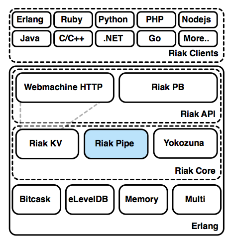

Imagine uma roleta num casino, onde qualquer número tem a probabilidade de 1 em 37 de sair. Imagine agora que você poderia apostar que um determinado número não ia sair (97,3% de hipóteses a seu favor), e ganhando pagaria 10 vezes a sua aposta. Você faria essa aposta? Eu pegava na minha carteira tão rápido que o meu polegar iniciava um incêndio no meu bolso.
Agora imagine que podia apostar de novo, mas só ganha se a roda fizer 100 rotações seguidas em seu favor, senão perde. Será que você ainda joga? Ganhar uma aposta simples pode ser fácil, mas ao longo de várias tentativas as probabilidades não são favoráveis.
As pessoas estão sempre a fazer este tipo de apostas com os dados. Um único servidor tem boas hipóteses de continuar disponível. Mas quando você administra um cluster com milhares de servidores, ou biliões de pedidos, as hipóteses de qualquer um falhar tornam-se muito grandes.
Até um desastre de uma-vez-num-milhão é comum à luz de um bilião de oportunidades.
O Riak é uma base de dados distribuída de código aberto que oferece alta disponibilidade, tolerância a falhas e escalabilidade quase linear. Basicamente, significa que o Riak raramente tem falhas de serviço e que cresce com o sistema.
À medida que o mundo moderno que interliga com ligações cada vez mais complexas, grandes mudanças estão a ocorrer na gestão de dados. A web e os dispositivos com conectividade provocaram uma explosão tanto na recolha como no acesso a dados, inédito na história moderna. A magnitude de dados que estão a ser armazenados e geridos cresceu a um ritmo vertiginoso, e em paralelo, mais pessoas que nunca precisam de acesso rápido e confiável a esses dados. É isto que é geralmente se chama de Big Data.
Há muita discussão em torno do que constitui o Big Data.
Eu tenho 6 Terabytes em minha casa para guarar vídeos e outros backups. Isso conta? Por outro lado, o CERN armazenou cerca de 200 Petabytes na procura do Higgs Boson.
É um número difícil de definir, porque Big Data é uma figura pessoal. O que é grande para uma pessoa pode ser pequeno para outra. É por isso que muitas definições não se referem a tamanhos em específico, mas a valores relativos. Uma razoável, embora extensa, definição de Big Data é dado pela Gartner:
Big Data é informação de elevado volume, de alta velocidade, e/ou de grande variedade, que exigem novas formas de processamento para permitir tomar decisões inteligentes, compreender os dados e otimizar processos.
O cenário ideal para usar o Riak é com um elevado volume de dados (que estão disponíveis para ler e escrever quando for preciso), a alta velocidade (responde facilmente ao crescimento) e com grande variedade (pode armazenar qualquer tipo de dados como um valor).
O Riak foi construído como uma solução para problemas reais do Big Data, com base no modelo do Dynamo da Amazon. O Dynamo foi pensado para ser altamente disponível---o que significa que responde rapidamente a pedidos em escalas muito grandes, mesmo se a aplicação armazena e serve Terabytes de dados por dia. O Riak já era utilizado em produção antes de ser disponibilizado em código aberto em 2009. Atualmente, é usado pelo Github, Comcast, Voxer, Disqus ente outros, com os maiores sistemas a armazenar centenas de TBs de dados, manipulando diariamente vários GBs por máquina.
O Riak foi escrito na linguagem de programação Erlang. O Erlang foi escolhido devido ao seu forte suporte à concorrência, comunicação distribuída, atualização de código em produção e tolerância a falhas. Como o Erlang corre numa máquina virtual, para executar o Riak é também necessário ter o Erlang instalado.
Portanto, será que você deve usar o Riak? Uma boa regra de ouro para os potenciais utilizadores é de se perguntar se cada momento de indisponibilidade lhe vai custar de alguma forma (dinheiro, utilizadores, etc.). Nem todos os sistemas necessitam de uma disponibilidade tão elevada, e se for esse o seu caso, o Riak pode não ser para si.
Este não é um guia do estilo "instale e acompanhe". Este é um guia para "ler e compreender". Não se sinta obrigado a ter o Riak instalado, ou mesmo sequer ter um computador à mão, ao iniciar este livro. Você pode desejar instalar em algum momento e, nesse caso, as instruções podem ser encontradas na documentação oficial: Riak Docs.
Na minha opinião, a parte mais importante deste livro é o capítulo Conceitos. Se você já tem algum conhecimento pode achar o começo aborrecido, mas isso muda rapidamente. Depois de lançar as bases teóricas, vamos ajudar os programadores a usar o Riak, aprendendo como se consulta os dados e como alterar algumas configurações. Finalmente, vamos falar sobre os detalhes básicos que os administradores devem saber, como por exemplo a criação de um cluster Riak, configurar alguns valores, usar ferramentas opcionais, e muito mais.
Quando eu conheci o Riak pela primeira vez, achei alguns conceitos assustadores. Mas entender essas teorias, fez-me apreciar as dificuldades na área de base de dados distribuídas, e as soluções elegantes fornecidas pelo Riak.
Acredite-me, caro leitor, quando eu sugiro que pensar de forma distribuída é estranho. Quando encontrei pela primeira vez o Riak, eu não estava preparado para alguns de seus conceitos mais estranhos. Os nossos cérebros simplesmente não foram feitos para pensar de uma forma distribuída e assíncrona. Richard Dawkins criou o termo Mundo Médio---a terra que os seres humanos encontram todos os dias, que existe entre os extremos do tamanho muito pequeno dos quarks, até à imensidão do universo. Nós não consideramos estes extremos com clareza, porque nós não os encontramos todos os dias, assim como computações e armazenamentos distribuídos. Assim, nós criamos modelos e ferramentas para trazer o ato físico de recursos paralelos espalhados, para os nossos termos mais síncronos. O Riak esforça-se para simplificar as partes duras, mas não finge que eles não existem. Assim como você nunca pode esperar ser um programador excecional sem qualquer conhecimento de memória ou de gestão de CPU, também não pode nunca desenvolver com segurança grupos de máquinas altamente disponíveis sem um alto conhecimento de alguns conceitos subjacentes.
A existência de bases de dados como Riak é o culminar de duas coisas: tecnologia acessível que estimulou diferentes requisitos para os dados, e as lacunas no mercado de gestão de dados.
Primeiro, como temos visto melhorias tecnológicas constantes, juntamente com reduções de custo, grandes quantidades de poder de computação e armazenamento estão agora ao alcance de quase todos. Junto com o nosso mundo cada vez mais interligado por causa da web e pelos computadores cada vez mais pequenos e baratos (como os smartphones), isto causou um crescimento exponencial de dados, e uma exigência de maior previsibilidade e velocidade pelos utilizadores mais tecnológicos. Em suma, mais dados estão a ser criados pelos utilizadores, enquanto mais dados estão a ser geridos nos servidores.
Em segundo lugar, os sistemas de gestão de base de dados relacionais (RDBMS) especializaram-se ao longo dos anos num conjunto de cenários como business intelligence. Eles também foram tecnicamente ajustados para tirar o maior desempenho possível de grandes servidores individuais, como como otimização de acessos a disco, mesmo enquanto servidores uso pessoal (ou virtualizado) a custos acessíveis se tornavam cada vez mais atraentes para crescer e escalar horizontalmente. Enquanto as falhas das base de dados relacionas se tornavam aparentes, implementações personalizadas surgiram em resposta a problemas específicos não originalmente previstos pela BDs relacionais.
Estas novas base de dados são informalmente chamadas de NoSQL, e o Riak faz parte desse grupo.
As base de dados atuais podem de um modo geral ser categorizadas no modo em que representam os dados. Embora eu esteja a apresentar 5 principais tipos (os últimos 4 são considerados modelos NoSQL), estas linhas não são sempre claras ---pode-se usar algumas BD chave/valor como BD de documentos, ou pode-se usar uma BD relacional para armazenar apenas dados do tipo chave/valor.
Ao contrário de base de dados relacionais, mas semelhante BDs de documentos e colunares, não se pode ser JOIN de objetos no Riak. O código do cliente é o responsável por ler e resolver os valores. Isto também pode ser feito atrás do MapReduce.
A capacidade de facilmente realizar JOINs em servidores físicos diferentes, é um compromisso que separa as base de dados de um só nó como as BDs relacionais e de grafos, de sistemas naturalmente particionáveis como as BDs de documentos, colunares e de chave/valor.
Esta limitação muda a forma como se modela os dados. A normalização relacional (organização de dados para reduzir a redundância) existe para sistemas que podem facilmente realizar JOINs por cada pedido. No entanto, a capacidade de se espalhar os dados em diversos nós requer uma abordagem desnormalizada, onde alguns dados são duplicados, e os valores calculados podem ser armazenados por razões de desempenho.
Relacional. Base de dados tradicionais normalmente usam SQL para modelar e consultar os dados. Eles são úteis para os dados que podem ser armazenados num esquema altamente estruturado, mas ainda assim requerem uma alta flexibilidade na sua consulta. Crescer uma base de dados relacional (RDBMS), tradicionalmente ocorre pela compra de hardware mais poderoso (crescimento vertical).
Exemplos: PostgreSQL, MySQL, Oracle
Grafo. Estas BDs existem para dados altamente interligados. Eles notabilizam-se na modelação de relações complexas entre nós, e muitas implementações conseguem lidar com biliões de nós e relacionamentos (ou arestas e vértices). Eu tendo a incluir triplestores (triplos) e * BDs de objetos* como variantes especializadas.
Exemplos: Neo4j, Graphbase, InfiniteGraph
Documento. BDs de documentos modelam valores hierárquicos chamados documentos, representados em formatos como JSON ou XML, e não impõem um esquema no documento. Eles normalmente suportam a distribuição por vários servidores (crescimento horizontal).
Exemplos: CouchDB, MongoDB, Couchbase
Colunar. Popularizado pelo BigTable da Google, esta forma de base de dados existe para escalar para vários servidores, e agrupa os dados em famílias de colunas. Valores de uma coluna podem ser individualmente modificados e geridos, apesar das famílias serem definidas com antecedência, ao contrário de esquemas em RDBMS.
Exemplos: HBase, Cassandra, BigTable
Chave/Valor. BDs de Chave/Valor, ou CV, são conceptualmente como tabelas de hash, onde os valores são armazenados e acedidos por uma chave imutável. Elas variam desde um único servidor como o Memcached usado para caches de alta velocidade, até sistemas de múltiplos datacenters distribuídos como o Riak Enterprise.
Exemplos: Riak, Redis, Voldemort
Riak é uma BD chave/valor(CV), construído a partir do zero para distribuir com segurança os dados num cluster de servidores físicos, chamados de nós. Um cluster do Riak também é conhecido como um anel (vamos falar sobre o porquê mais tarde).
O Riak funciona de forma semelhante a uma tabela de hash muito grande. Dependendo do seu conhecimento, pode também chamá-lo de mapa, ou dicionário, ou objeto. Mas a ideia é a mesma: você armazena um valor com uma chave imutável, e recupera-o mais tarde.

Chave/valor é a construção mais básica de todas na informática. Você pode pensar numa chave como um endereço de uma casa, como por exemplo, a casa do Bob com a chave única de 5124, enquanto o valor seria talvez Bob (e o seu material).
hashtable["5124"] = "Bob"
E recuparar o Bob é tão fácil como ir à sua casa.
bob = hashtable["5124"]
Vamos dizer que o pobre do Bob morre, e a Claire se move para esta casa. O endereço permanece o mesmo, mas o conteúdo mudou.
hashtable["5124"] = "Claire"
Pedidos subsequentes por 5124 vão devolver agora Claire.
Os endereços em "Riakville" são mais do que o número de casa, são também o endereço de uma rua. Podia haver outro 5124 noutra rua, então a forma de podemos garantir a exclusividade de um endereço é exigindo ambos, como por exemplo 5124, Rua Principal.
Buckets* (ou baldes) são análogos a nomes de ruas: eles fornecem espaço de nomes para que chaves com nomes iguais possam coexistir em buckets diferentes.
Por exemplo, enquanto Alice pode viver na 5122, Rua Principal, pode haver um posto de gasolina na 5122, Rua Boavista.
principal["5122"] = "Alice"
boavista["5122"] = "Gas"
Claro que você podia ter chamado as chaves de principal_5122 e
boavista_5122, mas os buckets permitem a nomeação de chaves mais limpa, e
tem outros benefícios adicionais que vão ser descritos mais tarde.
Os buckets são tão úteis no Riak que todas as chaves têm que pertencer a um,
ou seja, não há um espaço de chaves global. A verdadeira definição de uma chave
única no Riak é na verdade bucket/chave.
Por conveniência, nós chamamos um par bucket/chave + valor de objeto, poupando-nos a verbosidade de "chave X no balde Y e seu valor".
A distribuição de dados entre diversos nós é como Riak é capaz de permanecer altamente disponível, enquanto também é tolerante a interrupções e partições de rede. O Riak combina dois estilos de distribuição para atingir isto: replicação e partições.
Replicação é o ato de duplicar os dados em vários servidores. O Riak replica os dados por defeito.
A vantagem óbvia da replicação é que se um nó falhar, os nós que contêm os dados replicados permanecem disponíveis para atender os pedidos. Em outras palavras, o sistema permanece disponível.
Por exemplo, imagine que tem uma lista de chaves de países, cujos valores são as capitais dos mesmos. Se tudo o que você fizer for replicar os dados para dois servidores, você teria duas base de dados duplicadas.

A desvantagem com a replicação é que está-se a multiplicar a quantidade de armazenamento necessário para cada réplica. Há também alguma sobrecarga da rede com esta abordagem, já que os valores também devem ser encaminhados para todos os nós replicados, nas escritas. Mas há um problema mais insidioso com esta abordagem, que será coberto em breve.
Uma partição é como dividimos um conjunto de chaves em servidores físicos separados. Ao invés de valores duplicados, nós escolhemos um servidor para hospedar exclusivamente um intervalo de chaves, e os outros servidores para hospedar os restantes intervalos não sobrepostos.
Com o particionamento, a nossa capacidade total pode aumentar sem qualquer hardware grande e caro, apenas muitos pequenos servidores genéricos. Se decidirmos particionar a nossa base de dados em 1000 partes em 1000 nós, reduzimos (hipoteticamente) a quantidade de trabalho que qualquer servidor deve fazer para um milésimo (1/1000).
Por exemplo, se nós particionarmos os nossos países em dois servidores, podemos colocar todos os países que começam com letras A-N no nó A, e O-Z no nó B.

Há um pouco de sobrecarga usando esta abordagem. Tem que haver um serviço que
saiba a correspondência entre os intervalos de chaves e os respetivos nós. Uma
aplicação que solicite o valor da chave Portugal deverá ser encaminhado para o
nó A e não para o nó B.
Há também outro aspeto negativo. Ao contrário de replicação, o simples particionamento dos dados realmente diminui o uptime. Se um nó falhar, essa partição de dados inteira ficará indisponível. É por isso que o Riak usa tanto a replicação como o particionamento.
Já que as partições nos permitem aumentar a capacidade, e a replicação melhora a disponibilidade, o Riak combina-os. Particiona e replica os dados em vários nós.
Onde no nosso exemplo anterior particionamos os dados em 2 nós, podemos agora replicar cada uma dessas partições em mais 2 nós, para um total de 4.
O nosso número de servidores aumentou, mas também a nossa capacidade e confiabilidade. Se estiver a projetar um sistema horizontalmente escalável usando particionamento de dados, deve lidar com a replicação dessas partições.
A equipa do Riak sugere um mínimo de 5 nós para um cluster do Riak, a replicar
para 3 nós (esta configuração é chamada de n_val, para o número de nós na
qual deve replicar cada objeto).

O Riak usa a técnica de hash consistente, para mapear objetos num círculo (o anel).
As partições do Riak não são mapeadas alfabeticamente (como usamos nos exemplos
acima), mas, em vez disso, uma partição mapeia uma gama de hashes de chaves
(função SHA-1 aplicada a uma chave). O valor máximo da hash é de 2^160, e é
dividido num número específico de partições---64 partições por defeito (a
configuração no Riak é feita com ring_creation_size).
Vamos ver o que tudo isto significa. Se você tem a chave favorite, aplicar o
algoritmo SHA-1 daria 7501 7a36 ec07 fd4c 377a 0d2a 0114 00ab 193e 61db em
hexadecimal. Com 64 partições, cada uma tem 1/64 dos 2^160 valores possíveis,
sendo a gama da primeira partição de 0 a 2^154-1, o segundo intervalo é de
2^154 a 2*2^154-1, e assim por diante, até à última partição de 63*2^154-1
a 2^160-1.
Não vamos fazer agora as contas, mas confie em mim quando eu digo que favorite
cai dentro da partição 3.
Se visualizarmos as nossas 64 partições como um anel, favorite recai aqui:

"Ele não acabou de dizer que o Riak sugere um mínimo de 5 nós? Como podemos "colocar 64 partições em 5 nós?. Na verdade, cada nó tem mais que uma partição, "cada uma gerida por um vnode, ou nó virtual.
Contamos à volta do anel de vnodes por ordem, atribuindo a cada nó o próximo vnode disponível, até que todos os vnodes sejam contabilizados. Logo a partição/vnode 1 seria do Nó A, o vnode 2 seria do Nó B, até ao vnode 5 que seria do Nó E. De seguida continuamos a dar ao Nó A o vnode 6, ao Nó B o vnode 7, e assim por diante, até que os vnodes estejam esgotados, resultando nesta lista:
Até agora temos particionado o anel, mas e a replicação? Quando escrevemos um novo valor no Riak, o resultado vai ser replicado num determinado número de nós, definidos pela configuração chamada `n_val. No nosso cluster de 5 nós, por defeito este valor é 3.
Então, quando nós escrevemos o nosso objeto favorite para o vnode 3, este será
replicado para os vnodes 4 e 5. Isto coloca o objeto nos nós físicos C, D e E.
Quando a escrita estiver completa, mesmo que o nó C falhe, o valor ainda está
disponível nos outros 2 nós. Este é o segredo da alta disponibilidade do Riak.
Podemos visualizar o anel com seus vnodes, nós, e onde o favorite vai ficar:

O anel não é mais do que um array circular de partições de hash. É também um sistema de metadados que é copiado para cada nó. Cada nó está ciente de todos os outros nós do cluster, que nós contêm que vnodes, e outros dados do sistema.
Com esta informação, os acessos a dados podem contactar qualquer nó. Ele vai horizontalmente ler os dados aos nós certos, retornando o resultado.
Até agora cobrimos as partes boas do particionamento e da replicação: altamente disponível para responder a pedidos e capacidade de escalar em hardware genérico. Com os claros benefícios de escalar horizontalmente, então porque não é mais comum?
As bases de dados RDBMS clássicas têm escritas coerentes. Quando uma escrita
está confirmada, leituras subsequentes têm a garantia de devolver o valor mais
recente. Se eu guardar o valor pizza fria para a minha chave favorito, cada
leitura no futuro devolverá consistentemente pizza fria até que esse valor
mude.
Mas quando os valores são distribuídos, a coerência não pode ser garantida. A
meio da replicação de um objeto, dois servidores podem ter resultados
diferentes. Quando atualizamos a chave favorito para pizza fria num nó,
outro nó pode ter o valor mais antigo pizza, por causa de um problema de
conectividade de rede. Se pedir o valor da chave favorito em cada lado da
divisão da rede, dois resultados diferentes poderão ser devolvidos---a base de
dados está incoerente.
Se a coerência não deve ser comprometida, podemos então sacrificar alguma disponibilidade. Podemos, por exemplo, decidir bloquear a inteira base de dados durante uma escrita, e simplesmente rejeitar todos os pedidos até que o valor seja replicado para todos os nós relevantes. Os clientes têm de esperar enquanto os seus resultados obtêm um estado coerente (garantia que todas as réplicas retornam o mesmo valor) ou a escrita falha se os nós tiverem problemas de comunicação. Para muitos cenários de alto tráfego de leituras/escritas, como um carrinho de compras online, onde até mesmo pequenos atrasos fará com que as pessoas comprarem noutro lugar, isso não é um compromisso aceitável.
Este compromisso é conhecido como o teorema de CAP, de Eric Brewer. O teorema afirma informalmente que você pode ter um sistema com C (coerência), A (disponibilidade), ou P (tolerante a partições), mas só pode escolher dois dos três. Assumindo que o seu sistema é distribuído, você vai ser tolerante a partições, o que significa que a sua rede pode tolerar a perda de pacotes. Se uma partição de rede ocorre entre nós, os servidores continuam a correr.
Estritamente falando, o Riak tem um compromisso ajustável entre latência e disponibilidade, em vez de coerência e disponibilidade. Acelerando o Riak ao manter os valores e R e W baixos, vai aumentar a probabilidade de haver dados temporariamente incoerentes (alta disponibilidade). Pelo contrário, manter esses valores de R e W altos, vai melhorar a probabilidade de encontrar leituras mais recentes (mas ainda não é bem coerência forte); no entanto, vai atrasar um pouco o Riak e fazer com que seja mais provável um pedido (leitura ou escrita) falhe (em casos de partições).
Atualmente, nenhuma configuração pode fazer do Riak verdadeiramente CP no caso geral, mas opções para alguns casos especiais estão a ser pesquisados.
Uma pergunta o teorema de CAP exige reposta num sistema distribuído é: desisto de coerência forte, ou desisto de disponibilidade máxima? Se um pedido chega, posso rejeitar outros pedidos até que se possa garantir a coerência entre os nós? Ou aceitar todos os pedidos a todo o custo, com a ressalva de que a base de dados pode-se tornar incoerente?
A solução do Riak é baseada abordagem original do Dynamo da Amazon: um sistema AP ajustável. Ele tira vantagem do fato de que, embora o teorema de CAP seja verdade, você pode escolher que tipo de compromissos está disposto a fazer. O Riak é altamente disponível para aceitar pedidos, com a capacidade de ajustar o seu nível de disponibilidade (aproximando-se, mas nunca alcançando, coerência forte).
O Riak permite que você escolha quantos nós devem replicar um objeto, e em
quantos nós devem ser escritos ou lidos por pedido. Estes valores são
configurações com o nome de n_val (o número de nós para replicar), r (o
número de nós lidos antes de responder), e w (o número de nós escritos antes
do pedido ser considerado bem sucedido).
Um exercício mental pode ajudar a esclarecer as coisas.

Com o nosso cluster de 5 nós, ter um n_val=3 significa que os valores
inevitavelmente serão replicados para 3 nós, como já discutimos anteriormente.
Este é o valor N. Você pode definir outras configurações com o valor do
n_val, usando o atalho all.
Mas você pode não querer esperar para que todos os nós sejam escritos antes de
retornar. Você pode optar por escrever para todos os 3 (w=3 ou w=all), o que
significa que esses valores são mais propensos a ficarem coerentes, ou optar por
escrever apenas para 1 nó (w=1), e permitir que o restantes 2 nós escrevam de
forma assíncrona, mas ao mesmo tempo retornam uma resposta mais rápida. Este é o
valor W.
Em outras palavras, definindo w=all ajudaria a garantir que seu sistema seria
mais provável de ser coerente, à custa de esperar mais tempo, e com
possibilidade das escritas falharem se menos de 3 nós estiverem disponíveis (ou
seja, mais de metade dos seus servidores estão em baixo).
No entanto, uma escrita que falhe não é necessariamente uma falha. O cliente pode receber uma mensagem de erro, mas a escrita tipicamente terá sucedido num número de nós menor que W. Inevitavelmente, esta escrita vai ser propagada para todas os nós que guardam essa chave.
As leituras têm os mesmo compromissos . Para garantir que tem o valor mais
recente, você pode ler todos os 3 nós que contêm o objeto (r=all). Mesmo que
apenas 1 dos 3 nós tenha o valor mais recente, podemos comparar os valores de
todos os nós uns com os outros e escolher o mais recente, garantindo assim
alguma coerência. Lembre-se de quando mencionei que as bases de dados RDBMS têm
escritas coerentes? Isto é quase como leituras coerentes. No entanto, assim
como no caso do w=all, uma leitura irá falhar se menos de 3 nós estejam
disponíveis para serem lidos. Finalmente, se você só quer ler rapidamente
qualquer valor, a configuração r=1 tem baixa latência, e provavelmente é
coerente se w=all.
Em termos gerais, os valores N/R/W são a maneira do Riak permitir que você troque menor coerência para mais disponibilidade.
Se acompanhou até agora, eu só tenho mais um conceito novo para lhe explicar.
Escrevi anteriormente que com r=all, nós podemos "comparar os valores de todos
os nós uns com os outros e escolher o mais recente." Mas como realmente sabemos
qual é o último valor, ou valor correto? É aqui que os vetores versão (ou
vclocks) entram em jogo.
Os vetores versão medem uma sequência de eventos, assim como um relógio normal. Mas uma vez que não se pode razoavelmente manter os relógios de dezenas, centenas, ou milhares de servidores em sincronia (sem hardware realmente exótico, como relógios atómicos geo-sincronizados, ou capacidades quânticas), em vez disso, mantemos uma atualizada história de eventos.
Vamos usar o nosso exemplo favorito novamente, mas desta vez temos 3 pessoas a
tentar chegar a um consenso sobre a sua comida favorita: Aaron, Britney, e
Carrie. Vamos acompanhar o valor que cada um escolheu e o seu respetivo vclock.
(Para ilustrar os vetores versão, vamos fazer um pouco de batota. Por defeito, o (Riak já não usa informação dos clientes nos vetores versão. Em troca, usa (informação do servidor que coordenou essa escrita. No entanto, o conceito é o (mesmo. Vamos também ignorar os tempos reais que estão também guardados em cada (vetor versão.)
Quando o Aaron define o objeto favorito para pizza, um vetor versão poderia
conter o seu nome e o número de atualizações por ele realizadas.
vclock: {Aaron: 1}
value: pizza
Entretanto a Britney chega e lê o objeto favorito, mas decide atualizar de
pizza para pizza fria. Ao utilizar vclocks, ela deve fornecer o vclock
devolvido na leitura que fez anteriormente e que quer atualizar. É assim que o
Riak pode ajudar a garantir que você está a atualizar um valor que já existia, e
que não está apenas a inserir o seu próprio valor (sem ler o que já existia).
vclock: {Aaron: 1, Britney: 1}
value: pizza fria
Ao mesmo tempo que a Britney, a Carrie decide que a pizza foi uma escolha
terrível, e tentou alterar o valor para lasanha.
vclock: {Aaron: 1, Carrie: 1}
value: lasanha
Isto representa um problema, porque agora existem dois vetores versão em jogo
que divergem do original {Aaron: 1}. Se configurado assim, o Riak vai
armazenar os dois valores e os dois vclocks.
Mais tarde no dia, a Britney verifica novamente, mas desta vez ela vê os dois valores conflituosos (os chamados siblings, que vamos discutir no próximo capítulo), com dois vclocks.
vclock: {Aaron: 1, Britney: 1}
value: pizza fria
---
vclock: {Aaron: 1, Carrie: 1}
value: lasanha
Fica claro que uma decisão deve ser tomada. Talvez a Britney saiba que o pedido
original do Aaron foi pizza e portanto duas pessoas concordaram com pizza,
então ela resolve o conflito ao escolher novamente pizza e atualizando o vetor
versão.
vclock: {Aaron: 1, Britney: 2}
value: pizza
Agora estamos de volta ao caso simples, onde pedindo o valor do favorito só
vai devolver o valor acordado pizza.
Se você é um programador, pode perceber que isso não é muito diferente de um sistema de controle de versões, como o git, onde ramos conflituosos podem exigir resolução manual.
Então porque não instalar uma comum base de dados relacional. Afinal, o MySQL tem a capacidade de formar clusters, e é ACID (Atómico, Coerente, Isolável e Durável), certo? Sim e não.
Um nó por si só é ACID, mas o cluster inteiro não consegue ser, a não ser que haja perda de disponibilidade, e muitas vezes ainda pior, um aumento na latência. Quando se escreve para um nó primário e existe replicação para um nó secundário, pode ocorrer uma partição de rede. Para continuar disponível, o nó secundário vai deixar de estar sincronizado (mas será inevitavelmente coerente).
Ou toda a transação pode falhar, fazendo com que todo o cluster fique indisponível. Mesmo as base de dados ACID não podem escapar ao teorema de CAP.
Ao contrário de base de dados de um único nó como o Neo4j ou o PostgreSQL, o Riak não suporta transações ACID. O bloqueio de vários servidores ia matar a disponibilidade das escritas, e igualmente preocupante, ia aumentar a latência. Enquanto as transações ACID prometem Atomicidade, Coerência, Isolamento e Durabilidade---o Riak e as outras base de dados NoSQL seguem o BASE, ou Basicamente Disponível, Estado Transiente e Inevitavelmente Coerente.
A sigla BASE foi concebida como um sinónimo para as metas das bases de dados não transacionais/ACID como o Riak. É dado como aceite que a disponibilidade nunca é perfeita (basicamente disponível), todos os dados estão em mudança (estado transiente), e que a coerência é geralmente inatingível (inevitavelmente coerente).
Esteja com atenção se alguém promete transações ACID distribuídas e altamente disponíveis---é normalmente acompanhado por algum adjetivo diminutivo ou ressalva como só em operações por linha, ou só em transações no nó, o que basicamente significa não transacional nos termos que normalmente usamos para defini-lo. Não estou a dizer que é impossível, mas é certamente assunto para estudar com atenção.
À medida que o número dos seus servidores cresce---especialmente quando se À começa a introduzir vários datacenters---a possibilidade de partições e falhas À de nós aumenta drasticamente. O meu melhor conselho é planear antecipadamente.
O Riak é projetado para conferir uma série de benefícios no mundo real, mas igualmente, para lidar com as consequências de deter tal poder. Hashes consistentes e vnodes são uma solução elegante para escalar horizontalmente entre servidores. N/R/W permite ao utilizador brincar com o teorema CAP e ajustá-lo de acordo com o seu caso. E os vetores versão permitem dar mais um passo para atingir a verdadeira coerência, permitindo gerir os conflitos que ocorrerem quando existe elevada carga nos servidores.
Nós vamos cobrir outros conceitos técnicos, conforme necessário, como o protocolo de gossip, o hinted handoff e o read-repair (leitura-reparação).
De seguida, vamos ver o Riak do ponto de vista do utilizador. Vamos ver pesquisas, tirar proveito de hooks de escritas e examinar as opções alternativas de consulta como indexação secundária, pesquisa e MapReduce.
Vale a pena mencionar que eu uso a palavra "nó" muitas vezes. Realisticamente, isso significa um servidor físico/virtual, mas realmente, o Riak interessa-se por vnodes.
Quando se escreve para múltiplos vnodes , o Riak vai tentar difundir os valores
para o maior número de servidores físicos possível. No entanto, isto não é
garantido (por exemplo, se só tiver 2 nós físicos com o n_val por defeito
igual a 3, alguns dados serão copiados duas vezes para o mesmo servidor). É mais
fácil pensar nos vnodes como instâncias do Riak, e é mais simples do que estar
sempre qualificar "vnode". Se alguma coisa se aplicar especificamente a um
vnode, eu dizê-lo-ei explicitamente.
Vamos adiar os detalhes da instalação do Riak para já. Se quiser acompanhar, é fácil começar ao seguir a documentação de instalação no site (http://docs.basho.com). Se não, esta é uma secção perfeita para ler enquanto você está sentado no comboio sem Internet.
Configurar o Riak é muito fácil de fazer, uma vez entendidos alguns dos seus pormenores. É um BD chave/valor no sentido técnico (você associa valores com chaves, e recupera-os usando as mesmas chaves), mas oferece muito mais. Você pode escrever funções para executar antes ou depois de uma escrita, ou indexar dados para uma leitura rápida. O Riak uma pesquisa idêntica ao SOLR, que permite executar funções MapReduce para extrair e agregar dados num cluster enorme, num período de tempo relativamente curto. Vamos mostrar algumas das configurações específicas para buckets, que os administradores podem configurar.
O Riak tem drivers oficiais para as seguintes linguagens: Erlang, Java, PHP, Python, Ruby
Incluindo os drivers fornecidos pela comunidade, as linguagens suportadas são ainda mais numerosas: C/C++, Clojure, Common Lisp, Dart, Go, Groovy, Haskell, JavaScript (jquery and nodejs), Lisp Flavored Erlang, .NET, Perl, PHP, Play, Racket, Scala, Smalltalk
Há ainda dezenas de funcionalidades extras que podem ser encontradas na documentação.
Já que o Riak é uma base de dados chave/valor, os comandos mais básicos são escrever e ler valores. Nós vamos usar a interface HTTP, através do curl, mas poderíamos facilmente usar Erlang, Ruby, Java ou qualquer outra linguagem suportada.
Os tipos básicos de pedidos sobre o Riak são: ler, escrever e eliminar valores. Estas ações estão relacionadas com métodos HTTP (PUT, GET, POST, DELETE).
PUT /riak/bucket/chave
GET /riak/bucket/chave
DELETE /riak/bucket/chave
O comando mais simples de escrita no Riak é fazer PUT de um valor. Isto exige
uma chave, um valor e um bucket. Usando o curl, todos os métodos HTTP têm o
prefixo -X. Colocar o valor pizza na chave favorito sobre o bucket
alimento é feito assim:
curl -XPUT "http://localhost:8098/riak/alimento/favorito" \
-H "Content-Type:text/plain" \
-d "pizza"
Eu escrevi algumas coisas estranhas aqui. A flag -d denota que a próxima
string vai ser o valor. Mantivemos as coisas simples com a string pizza,
declarando-a como texto com o comando -H 'Content-Type:text/plain'. Isto
define o tipo HTTP MIME deste valor como texto simples. Nós podíamos ter
definido qualquer valor, seja XML ou JSON---até mesmo uma imagem ou um vídeo. O
Riak não se interessa pelo tipo de dados que armazena, desde que o tamanho de
cada objeto não seja muito maior que 4MB (um limite teórico, mas recomendável
que não se ultrapasse).
O próximo comando lê o valor pizza que está no par bucket/chave
alimento/favorito.
curl -XGET "http://localhost:8098/riak/alimento/favorito"
pizza
Esta é a forma mais simples de leitura, devolvendo apenas o valor. O Riak contém muito mais informação, que você pode aceder se ler a resposta completa, incluindo o cabeçalho HTTP.
No curl você pode aceder a uma resposta completa usando a flag -i. Vamos
executar novamente a leitura acima, acrescentando esta flag.
curl -i -XGET "http://localhost:8098/riak/alimento/favorito"
HTTP/1.1 200 OK
X-Riak-Vclock: a85hYGBgzGDKBVIcypz/fgaUHjmdwZTImMfKcN3h1Um+LAA=
Vary: Accept-Encoding
Server: MochiWeb/1.1 WebMachine/1.9.0 (someone had painted...
Link: </riak/food>; rel="up"
Last-Modified: Wed, 10 Oct 2012 18:56:23 GMT
ETag: "1yHn7L0XMEoMVXRGp4gOom"
Date: Thu, 11 Oct 2012 23:57:29 GMT
Content-Type: text/plain
Content-Length: 5
pizza
As caraterísticas do HTTP estão um pouco fora propósito deste pequeno livro, mas vamos olhar para alguns pormenores dignos de nota.
A primeira linha dá o código de resposta 200 OK do HTTP versão 1.1. Você pode
estar familiarizado com o código 404 Not Found (não encontrado) em websites.
Existem muitos tipos de códigos de status
HTTP, e a interface
HTTP do Riak permanece fiel à sua intenção: 1xx Informativo, 2xx
Sucesso, 3xx Requer nova ação, 4xx Erro do Cliente, 5xx Erro do
Servidor.
Diferentes ações podem devolver diferentes códigos de resposta/erro. A lista completa pode ser encontrada na documentação oficial da API.
Um bloco de cabeçalhos representa diferentes tempos sobre o objeto ou o pedido.
Estes campos descrevem o corpo da mensagem HTTP (em termos Riak, é o valor).
text/xml.Outros cabeçalhos como Link serão cobertos mais tarde neste capítulo.
Semelhante ao PUT, o POST vai escrever um valor. Mas com o POST a chave é opcional. Tudo que precisa é do nome do bucket, e a irá ser gerada uma chave por si.
Vamos adicionar um valor JSON para representar uma pessoa no bucket pessoas. O
cabeçalho da resposta é o lugar onde um POST devolve a chave gerada para si.
curl -i -XPOST "http://localhost:8098/riak/pessoas" \
-H "Content-Type:application/json" \
-d "{"name":"aaron"}""
HTTP/1.1 201 Created
Vary: Accept-Encoding
Server: MochiWeb/1.1 WebMachine/1.9.2 (someone had painted...
Location: /riak/pessoas/DNQGJY0KtcHMirkidasA066yj5V
Date: Wed, 10 Oct 2012 17:55:22 GMT
Content-Type: application/json
Content-Length: 0
Você pode extrair essa chave do valor do Location. Tirando o facto de não ser
bonita, esta chave é tratada exatamente como se tivesse definido a sua própria
chave via PUT.
Você pode observar que nenhum corpo foi devolvido com a resposta. Para qualquer
tipo de escrita, você pode adicionar o parâmetro returnbody=true para forçar
devolução de um valor, juntamente com outros cabeçalhos relacionados com o
valor, como o X-Riak-Vclock e ETag.
curl -i -XPOST "http://localhost:8098/riak/pessoas?returnbody=true" \
-H "Content-Type:application/json" \
-d '{"name":"billy"}'
HTTP/1.1 201 Created
X-Riak-Vclock: a85hYGBgzGDKBVIcypz/fgaUHjmdwZTImMfKkD3z10m+LAA=
Vary: Accept-Encoding
Server: MochiWeb/1.1 WebMachine/1.9.0 (someone had painted...
Location: /riak/pessoas/DnetI8GHiBK2yBFOEcj1EhHprss
Link: </riak/pessoas>; rel="up"
Last-Modified: Tue, 23 Oct 2012 04:30:35 GMT
ETag: "7DsE7SEqAtY12d8T1HMkWZ"
Date: Tue, 23 Oct 2012 04:30:35 GMT
Content-Type: application/json
Content-Length: 16
{"nome":"billy"}
Isto é verdade para PUTs e POSTs.
A operação básica final é remoção de chaves, que é semelhante a obter um valor,
mas usa-se o método DELETE em vez do GET para o url/bucket/chave.
curl -XDELETE "http://localhost:8098/riak/pessoas/DNQGJY0KtcHMirkidasA066yj5V"
Um objeto removido é marcado internamente no Riak como removido, ao escrever um marcador conhecido como tombstone (lápide). Por defeito, outro processo chamado de reaper (ceifador) mais tarde irá eliminar os objetos marcados no servidor.
Este detalhe normalmente não é importante, a não ser para entender duas coisas:
Riak fornece dois tipos de listagens. A primeira listagem fornece uma lista de todos os buckets no cluster, enquanto que a segunda devolve uma lista de todas as chaves dentro de um bucket em específico. Ambas as ações são chamados da mesma forma, e vêm em duas variedades.
O seguinte código vai-nos dar todos os nossos buckets como um objeto JSON.
curl "http://localhost:8098/riak?buckets=true"
{"buckets":["alimentos"]}
E isso vai-nos dar todas as chaves dentro do bucket alimentos.
curl "http://localhost:8098/riak/alimentos?keys=true"
{
...
"keys": [
"favorito"
]
}
Se tivéssemos muitas chaves, isto pode claramente demorar muito tempo. Então, o
Riak também oferece a capacidade de transmitir a sua lista de chaves.
keys=stream irá manter a conexão aberta, devolvendo os resultados em blocos de
arrays. Quando a lista acaba, ele vai fechar a conexão. Você pode ver os
detalhes através do curl em modo verboso (-v) (grande parte dessa resposta
foi simplificada a seguir).
curl -v "http://localhost:8098/riak/alimentos?list=stream"
...
* Connection #0 to host localhost left intact
...
{"keys":["favorito"]}
{"keys":[]}
* Closing connection #0
Deve constatar que estes comandos de listagem não devem ser utilizado em ambientes de produção (são operações demasiado dispendiosas). Mas são úteis para desenvolvimento, em investigações, ou para a execução de análises ocasionais em horários com carga leve.
Até aqui só usamos os buckets como namespaces (espaços de nome), eles são capazes de mais.
Diferentes cenários irão ditar se um bucket é maioritariamente para escritas ou leituras. Você pode usar um bucket para armazenar os logs, um bucket para armazenar os dados da sessão, enquanto outro pode armazenar os dados do carrinho de compras. Às vezes, ter baixa latência é importante, enquanto outras vezes é mais importante alta durabilidade. E às vezes nós só queremos buckets para reagir de maneira diferente quando ocorre uma escrita.
A base da disponibilidade e da tolerância do Riak é o facto de se poder ler de, ou escrever para, vários nós. O Riak permite ajustar esses valores N/R/W (que nós já vimos em Conceitos) individualmente por bucket.
N é o número total de nós que um valor deve ser replicado, sendo 3 por defeito.
Mas podemos definir este n_val para um qualquer número menor do que o número
total de nós.
Qualquer propriedade de um bucket, incluindo o n_val, pode ser definido
através do envio dessa propriedade atrás do valor props, como um objeto JSON
para o URL do bucket. Vamos definir o n_val como 5 nós, o que significa que os
objetos escritos para carrinho serão replicada por 5 nós.
curl -i -XPUT "http://localhost:8098/riak/carrinho" \
-H "Content-Type: application/json" \
-d '{"props":{"n_val":5}}'
Você pode ver as propriedades de um bucket através de um GET para esse bucket.
Nota: O Riak devolve JSON não formatado. Se você tem uma ferramenta na linha de
comandos como o jsonpp (ou json_pp) instalado, você pode direcionar a saída para
lá, para facilitar a leitura. Os resultados abaixo são um subconjunto de todas
as propriedades props suportadas.
curl "http://localhost:8098/riak/carrinho" | jsonpp
{
"props": {
...
"dw": "quorum",
"n_val": 5,
"name": "carrinho",
"postcommit": [],
"pr": 0,
"precommit": [],
"pw": 0,
"r": "quorum",
"rw": "quorum",
"w": "quorum",
...
}
}
Como pode ver, o n_val é 5. É o esperado. Mas também pode ter notado que as
propriedades do carrinho devolveram quorum tanto para o r como para o w,
em vez de um número. Então, o que é um quorum?
Um quorum é um valor que seja mais de metade que todos os nós replicados
(floor(N/2) + 1). Este é um número importante, pois, se escrever em mais de
metade de todos os nós, e ler de mais de metade de todos os nós, então você vai
ter sempre o valor mais recente (em circunstâncias normais).
Aqui está um exemplo com o n_val de 5 ({A,B,C,D,E}). Se o seu w é um quorum
(que é 3, ou floor(5/2)+1), então um PUT pode responder com êxito depois de
escrever, por exemplo, para {A,B,C} ({D,E} serão eventualmente replicados).
Imediatamente depois, um quorum de leitura pode obter os valores de {C,D,E}.
Mesmo D e E tenham valores mais antigos, você leu um valor a partir do nó C, ou
seja, receberá o valor mais recente.
O que é importante é que as suas leituras e escritas se sobreponham. Desde que
r+w > n, na ausência de quorum desleixado (ver em baixo), você vai ser capaz
de obter os valores mais recentes. Ou, em outras palavras, você terá uma
razoável coerência de dados.
O quorum é um excelente valor por defeito, já que se está a ler a escrever
para de um conjunto alargado de nós. Mas se tem exigências específicas, como um
log que é muitas vezes escrito, mas raramente lido, você pode achar que faz
mais sentido escrever para um único nó, mas ler a partir de todos. Isto
proporciona-lhe a tal sobreposição.
curl -i -XPUT http://localhost:8098/riak/logs \
-H "Content-Type: application/json" \
-d '{"props":{"w":"one","r":"all"}}'
all - Todas as réplicas devem responder, que é o mesmo que definir o w ou
o r igual ao n_val.one - Definir o r ou o w igual a 1.quorum - A maioria das réplicas devem responder, ou seja, "metade mais 1".Num mundo perfeito, um quorum rigoroso (strict quorum) seria suficiente para a maioria dos pedidos de escrita. No entanto, a qualquer momento, um nó pode ir abaixo, ou a rede pode sofrer uma partição ou esquilos podem ficar presos nos tubos, provocando a indisponibilidade de nós necessários. Isto é conhecido como um quorum rigoroso. O Riak usa por defeito o que é conhecido como um quorum desleixado, o que significa que se qualquer nó primário não estiver disponível, o próximo nó disponível no anel vai aceitar pedidos.
Pense nisso assim: digamos que está fora de casa a beber com um amigo; você encomenda duas bebidas (W=2), mas antes de chegarem, ele sai temporariamente. Se você fosse um quorum rigoroso, você poderia simplesmente recusar ambas as bebidas, já que as pessoas necessárias (N=2) não estão disponíveis. Mas você prefere ser um bêbado desleixado ... hum, quero dizer quorum desleixado. Ao invés de negar a bebida, você aceita as duas bebidas, uma em nome do seu amigo (você também terá de pagar).

Quando ele volta, você dá-lhe a bebida. Isto é conhecido como hinted handoff ("oferta sugerida"), que veremos novamente no próximo capítulo. Por agora é suficiente notar que há uma diferença entre o quorum padrão desleixado (W), e exigir um quorum rigoroso de nós primários (PW).
Outros valores que você deve ter notado nas propriedades props do bucket são:
pw, pr, and dw.
O pr e o pw garantem que determinado número de nós primários estejam
disponíveis antes de ler ou escrever. O Riak lê ou escrever para nós de backup
se um destes nós primários não estiver disponível, por causa de uma partição de
rede ou alguma falha de outro servidor. Mas este prefixo p irá assegurar que
apenas os nós primários serão utilizados, onde primário significa um dos N
primeiros vnodes que guardam este bucket.
(Nós mencionamos acima que r+w > n nos dá um nível razoável de coerência, menos
quando temos quoruns desleixados. pr+pw > n fornece uma garantia bem mais
forte de coerência, embora hajam sempre casos de escritas conflituosas ou de
graves falhas no disco que prejudiquem a coerência.)
Finalmente, o dw representa o número mínimo de escritas duráveis necessárias
para o sucesso. Para um escrita com w ser bem sucedida, um vnode precisa
apenas de prometer que a escrita já começou, sem garantias de que essa escrita
foi mesmo efetuada em disco, ou seja, foi tornada durável. O dw significa que
o serviço de back-end (o serviço que trata da interface com o disco, como por
exemplo, o Bitcask) concordou em escrever o valor em disco. Apesar de um alto
valor dw penalizar o desempenho, há casos em que essa garantia extra é
valiosa, como no caso de dados financeiros.
É importante notar que estes valores (exceto on_val) podem ser alterados por
pedido.
Imagine um cenário onde você tem dados muito valiosos (por exemplo, o cartão de
crédito numa compra online), e quer ajudar a garantir que vai ser gravado em
disco nos nós relevantes, antes de ser considerado bem sucedido. Você podia
adicionar ?dw=all no fim da sua operação de escrita.
curl -i -XPUT http://localhost:8098/riak/carrinho/carrinho1?dw=all \
-H "Content-Type: application/json" \
-d '{"pago":true}'
Se qualquer um dos nós atualmente responsáveis pelos dados não conseguir
concluir o pedido (i.e., não conseguiu armazenar os dados), o cliente receberá
uma mensagem de falha. Isso não significa que a gravação falhou,
necessariamente: se dois dos três principais vnodes escreveram com sucesso o
valor, ele deve estar disponível para futuros pedidos. Portanto, aumentar a
coerência em favor de menos disponibilidade ao aumentar os valores dw ou pw,
pode levar a comportamentos inesperados.
Outra utilidade dos buckets são sua capacidade de impor comportamentos nas escritas, por meio de hooks. Você pode anexar funções para executar tanto antes, como depois, de um valor ser realmente escrito num bucket.
Funções que são executadas antes de uma escrita são chamadas de pré-commit, e tem a possibilidade de cancelar uma escrita completamente se os dados de entrada foram considerados maus de alguma forma. Um simples hook pré-commit é verificar se um valor existe de todo.
Eu coloco os meus próprios ficheiros dentro da instalação do Riak
./custom/my_validators.erl.
-module(my_validators).
-export([value_exists/1]).
%% O tamanho do objecto deve ser maior que 0 bytes
value_exists(RiakObject) ->
case erlang:byte_size(riak_object:get_value(RiakObject)) of
Size when Size == 0 ->
{fail, "É necessário um valor com tamanho maior que 0 bytes."};
_ -> RiakObject
end.
De seguida, compile o ficheiro.
erlc my_validators.erl
Instale o ficheiro, informando a instalação do Riak do seu novo código em
app.config (reinicie o Riak).
{riak_kv,
...
{add_paths, ["./custom"]}
}
Tudo que você precisa de fazer é definir o módulo e a função em Erlang como um
valor em JSON, para o array do pré-commit do bucket
{"mod":"my_validators","fun":"value_exists"}.
curl -i -XPUT http://localhost:8098/riak/carrinho \
-H "Content-Type:application/json" \
-d '{"props":{"precommit":[{"mod":"my_validators","fun":"value_exists"}]}}'
Se você tentar fazer um POST no bucket do carrinho sem um valor, deve devolver
a nossa mensagem de erro.
curl -XPOST http://localhost:8098/riak/carrinho \
-H "Content-Type:application/json"
É necessário um valor com tamanho maior que 0 bytes.
Você também pode escrever funções de pré-commit em JavaScript, embora o código Erlang execute mais rápido.
Os pós-commits são similares na forma e no uso, embora sejam sejam executados após a escrita ter sucedido. Principais diferenças:
A entropia é um subproduto da coerência inevitável. Por outras palavras: apesar da coerência inevitável dizer que uma escrita vai replicar para todos nós mais tarde ou mais cedo, pode haver um pequeno atraso enquanto todos os nós não contêm o mesmo valor.
Essa diferença é a entropia, e assim Riak criou várias estratégias de anti- entropia (também chamado AE). Nós já falamos sobre como um quorum R/W pode lidar com diferentes valores ao ler ou escrever, se os pedidos se sobrepuserem em pelo menos um nó. O Riak pode "reparar" a entropia, ou permitir que você o faça sozinho.
O Riak tem duas estratégias para lidar com nós que não concordam sobre um valor.
A estratégia mais básica e menos confiável para tratar da entropia é chamada de
Last Write Wins (Última Escrita Ganha). É a simples ideia de que a última
escrita irá substituir uma escrita mais antiga, de acordo com o relógio real do
nó local. Este é o comportamento por defeito do Riak atualmente (allow_mult
está a falso). Alternativamente, pode-se ativar o last_write_wins para truee
obter o mesmo resultado, mas sem guardar qualquer informação causal (vclocks),
aumentando o desempenho.
Realisticamente, esta opção existe por uma questão de desempenho e simplicidade, ou quando você realmente não se importa com a verdadeira ordem das operações, ou a possibilidade da perda de dados. Uma vez que é impossível para manter os relógios dos servidores em sincronia (sem os famosos relógios atómicos geo- sincronizados), este é o melhor palpite sobre o que "último" significa, com a precisão ao milissegundo.
Nós vimos em Conceitos), que os vetores versão (vclocks) são a maneira do Riak de saber a verdadeira sequência de eventos sobre um objeto. Vamos ver como usar os vclocks para resolver conflitos de uma maneira mais sofisticada que apenas aceitar o mais recente.
Cada nó do Riak tem seu próprio ID único, que é usado para indicar onde uma atualização acontece como a chave do vetor versão.
Os siblings ocorrerem quando há valores em conflito, sem nenhuma maneira clara
de o Riak saber qual valor está correto. O Riak vai tentar resolver estes
conflitos por si se o allow_mult estiver a falso. No entanto, pode optar que o
Riak crie siblings, se definir o allow_mult de um bucket para true.
curl -i -XPUT http://localhost:8098/riak/carrinho \
-H "Content-Type:application/json" \
-d '{"props":{"allow_mult":true}}'
Os siblings aparecem em dois casos:
Usamos o segundo caso para fabricar um conflito no último capítulo e vamos voltar a usar agora.
Imagine que criámos um carrinho de compras para um único frigorífico, e que
várias pessoas numa casa podem pedir comida através desse carrinho. Como não
queremos perder compras para não causar mau ambiente na casa, vamos configurar o
Riak com allow_mult=true.
Primeiro o Casey (vegetariano) coloca 10 pedidos de couve no seu carrinho.
O Casey escreve [{"item":"couve","contador":10}].
curl -i -XPUT http://localhost:8098/riak/carrinho/fridge-97207?returnbody=true \
-H "Content-Type:application/json" \
-d '[{"item":"couve","contador":10}]'
HTTP/1.1 200 OK
X-Riak-Vclock: a85hYGBgzGDKBVIcypz/fgaUHjmTwZTImMfKsMKK7RRfFgA=
Vary: Accept-Encoding
Server: MochiWeb/1.1 WebMachine/1.9.0 (someone had painted...
Link: </riak/carrinho>; rel="up"
Last-Modified: Thu, 01 Nov 2012 00:13:28 GMT
ETag: "2IGTrV8g1NXEfkPZ45WfAP"
Date: Thu, 01 Nov 2012 00:13:28 GMT
Content-Type: application/json
Content-Length: 28
[{"item":"couve","contador":10}]
Repare no vclock opaco devolvido pelo Riak através do cabeçalho X-Riak-Vclock.
O mesmo clock será devolvido para qualquer outra leitura, até que haja uma nova
escrita nesta chave.
O seu colega de quarto mark, lê o carrinho e adiciona leite. Para que o Riak
saiba a ordem das operações, o Mark fornece o vetor versão mais recente no seu
PUT.
O Mark escreve [{"item":"couve","contador":10},{"item":"leite","contador":1}].
curl -i -XPUT http://localhost:8098/riak/carrinho/fridge-97207?returnbody=true \
-H "Content-Type:application/json" \
-H "X-Riak-Vclock:a85hYGBgzGDKBVIcypz/fgaUHjmTwZTImMfKsMKK7RRfFgA="" \
-d '[{"item":"couve","contador":10},{"item":"leite","contador":1}]'
HTTP/1.1 200 OK
X-Riak-Vclock: a85hYGBgzGDKBVIcypz/fgaUHjmTwZTIlMfKcMaK7RRfFgA=
Vary: Accept-Encoding
Server: MochiWeb/1.1 WebMachine/1.9.0 (someone had painted...
Link: </riak/carrinho>; rel="up"
Last-Modified: Thu, 01 Nov 2012 00:14:04 GMT
ETag: "62NRijQH3mRYPRybFneZaY"
Date: Thu, 01 Nov 2012 00:14:04 GMT
Content-Type: application/json
Content-Length: 54
[{"item":"couve","contador":10},{"item":"leite","contador":1}]
Se reparar bem, o vclock mudou com a segunda escrita.
a85hYGBgzGDKBVIcypz/fgaUHjmTwZTImMfKsMKK7RRfFgA=
(depois da escrita do Casey)a85hYGBgzGDKBVIcypz/fgaUHjmTwZTIlMfKcMaK7RRfFgA=
(depois da escrita do Mark)Agora consideremos um terceiro companheiro de quarto, o Andy, que adora amêndoas. Antes do Mark ter adicionado o leite ao carrinho partilhado, o Andy leu o pedido das couves do Casey e adicionou amêndoas. Tal como o pedido do Mark, a escrita do Andy vai atualizar o vclock que inclui a informação do pedido do Casey, que é o último pedido que Andy conhecia à data da escrita.
O Andy escreve
[{"item":"couve","contador":10},{"item":"amêndoas","contador":12}].
curl -i -XPUT http://localhost:8098/riak/carrinho/fridge-97207?returnbody=true \
-H "Content-Type:application/json" \
-H "X-Riak-Vclock:a85hYGBgzGDKBVIcypz/fgaUHjmTwZTImMfKsMKK7RRfFgA="" \
-d '[{"item":"couve","contador":20},{"item":"amêndoas","contador":12}]'
HTTP/1.1 300 Multiple Choices
X-Riak-Vclock: a85hYGBgzGDKBVIcypz/fgaUHjmTwZTInMfKoG7LdoovCwA=
Vary: Accept-Encoding
Server: MochiWeb/1.1 WebMachine/1.9.0 (someone had painted...
Last-Modified: Thu, 01 Nov 2012 00:24:07 GMT
ETag: "54Nx22W9M7JUKJnLBrRehj"
Date: Thu, 01 Nov 2012 00:24:07 GMT
Content-Type: multipart/mixed; boundary=Ql3O0enxVdaMF3YlXFOdmO5bvrs
Content-Length: 491
--Ql3O0enxVdaMF3YlXFOdmO5bvrs
Content-Type: application/json
Link: </riak/carrinho>; rel="up"
Etag: 62NRijQH3mRYPRybFneZaY
Last-Modified: Thu, 01 Nov 2012 00:14:04 GMT
[{"item":"couve","contador":10},{"item":"leite","contador":1}]
--Ql3O0enxVdaMF3YlXFOdmO5bvrs
Content-Type: application/json
Link: </riak/carrinho>; rel="up"
Etag: 7kfvPXisoVBfC43IiPKYNb
Last-Modified: Thu, 01 Nov 2012 00:24:07 GMT
[{"item":"couve","contador":10},{"item":"amêndoas","contador":12}]
--Ql3O0enxVdaMF3YlXFOdmO5bvrs--
Uau! Que é isto tudo?
Como houve um conflito entre o Mark e Andy sobre o que devia ter o carrinho, o Riak manteve ambos os valores.
Como estamos a utilizar o cliente HTTP, o Riak devolveu o código 300 Multiple
Choices com o tipo MIME de multipart/mixed. Cabe agora ao utilizador analisar
os resultados (ou pode pedir um valor específico usando o Etag, também chamado
de Vtag).
Executar um simples GET sobre a chave /carrinho/fridge-97207 vai devolver os
vtags de todos os siblings.
curl http://localhost:8098/riak/carrinho/fridge-97207
Siblings:
62NRijQH3mRYPRybFneZaY
7kfvPXisoVBfC43IiPKYNb
O que se pode fazer com estes vtags? Pode solicitar um determinado sibling
usando o seu respetivo vtag. Para obter o primeiro sibling da lista (o leite
do Mark):
curl http://localhost:8098/riak/carrinho/fridge-97207?vtag=62NRijQH3mRYPRybFneZaY
[{"item":"couve","contador":10},{"item":"leite","contador":1}]
Se quiser recuperar todos os siblings, diga ao Riak que aceita uma mensagem com
múltiplos valores adicionando -H "Accept:multipart/mixed".
curl http://localhost:8098/riak/carrinho/fridge-97207 \
-H "Accept:multipart/mixed"
Quando são criados siblings, é a responsabilidade da aplicação saber como lidar com o conflito. No nosso exemplo, queremos aceitar apenas um dos pedidos? Devemos remover o leite e as amêndoas e apenas manter a couve? Devemos calcular o mais barato dos dois e manter a opção mais barata? Devemos juntar todos os resultados num único pedido? É por isso que podemos pedir ao Riak para não resolver este conflito automaticamente... queremos ter esta flexibilidade.
Quando temos conflitos, queremos resolvê-los. Uma vez que a resolução deste conflito é em grande parte específico a cada caso, o Riak permite que o utilizador escolha como a nossa aplicação deve proceder.
Por exemplo, vamos juntar todos os valores num único conjunto de resultados, ficando com o maior contador caso o item seja o mesmo. Quando acabar, escreva o resultado no Riak juntamente com o vclock do objeto com múltiplos valores que recebeu, assim o Riak sabe que você está a resolver o conflito, e você vai receber de volta um novo vetor versão.
Leituras subsequentes receberão um único valor (fruto da nossa "fusão").
curl -i -XPUT http://localhost:8098/riak/carrinho/fridge-97207?returnbody=true \
-H "Content-Type:application/json" \
-H "X-Riak-Vclock:a85hYGBgzGDKBVIcypz/fgaUHjmTwZTInMfKoG7LdoovCwA=" \
-d '[{"item":"couve","contador":10},{"item":"leite","contador":1},\
{"item":"amêndoas","contador":12}]'
Os seus dados e as suas necessidades de negócio irão ditar a abordagem apropriada à resolução de conflitos. Não é preciso escolher uma estratégia global, em vez disso, sinta-se livre para tirar proveito dos buckets no riak para especificar quais dados usam siblings e quais guardam cegamente o último valor escrito.
Um pequeno resumo de dois valores de configuração que lhe deve interessar modificar:
allow_mult por defeito é false, que significa que a última escrita ganha
sempre.allow_mult para true diz ao Riak para guardar valores em
conflito como siblings (irmãos).last_write_wins por defeito é false, mas, talvez contra o que é era
esperado, ainda podemos ter last write wins: o allow_mult é o parâmetro
chave nesta escolhe.last_write_wins para true vai otimizar as escritas ao ignorar
todos os vclocks.allow_mult e o last_write_wins para true não é suportado e
vai resultar em efeitos imprevisíveis.Quando uma leitura bem sucedida acontece, mas nem todas as réplicas concordam
sobre o valor, é executado o mecanismo chamado read repair (reparação na
leitura). Isto significa que o Riak irá atualizar as réplicas "atrasadas" com o
valor mais recente. Isso pode acontecer, ou quando um objeto não é encontrado (o
vnode não tem uma cópia), ou quando um vnode contém um antigo valor (antigo
significa que o seu vclock é um antepassado vclock mais recente). Ao contrário
do last_write_wins ou da resolução manual de conflitos, o read repair é
(obviamente, pelo nome) desencadeado por uma leitura, em vez de uma escrita.
Se os seus nós ficarem dessincronizados (por exemplo, se se aumentar o n_val
num bucket), você pode forçar o read repair através da realização de uma
operação de leitura de todas as chaves do bucket. Pode devolver not found (não
encontrado) da primeira vez, mas leituras posteriores vão devolver os valores
mais recentes.
Embora resolver conflitos durante leituras usando read repair seja suficiente para a maioria dos casos, os dados que nunca são lidos podem eventualmente ser perdidos devido a esses nós falharem e serem substituídos.
Com o Riak 1.3, foi introduzido a anti-entropia ativa (active anti-entropy) para pro-ativamente identificar e reparar dados incoerentes. Este mecanismo é útil também para recuperar da perda de dados quando os discos falham ou houve erros administrativos.
O custo desta funcionalidade é minimizado ao manter árvores de hashes sofisticadas ("Merkle Trees"), que facilitam a comparação do conjunto de dados entre nós virtuais. Esta funcionalidade pode ser desligada, caso seja desejado.
Até agora só lidamos com pesquisas de chave/valor. A verdade é que o par chave/valor é um mecanismo muito poderoso que abrange um largo espectro de cenários. No entanto, às vezes precisamos de pesquisar dados por valor, em vez da chave. Às vezes precisamos de realizar alguns cálculos, ou agregações, ou pesquisas mais avançadas.
A indexação secundária (2i) é uma estrutura de dados que reduz o custo de encontrar valores não-chave . Tal como muitas outras bases de dados, o Riak tem a capacidade de indexar dados. No entanto, dado que o Riak não tem conhecimento real dos dados que armazena (eles são apenas valores binários), ele usa metadados para indexar por nome, quer números ou binários.
Se a sua instalação estiver configurada para usar 2i (vamos ver isso no próximo
capítulo), uma simples escrita de um valor para Riak com o cabeçalho com prefixo
X-Riak-Index- e com sufixos _int para números e _bin para texto, irá criar
índices.
curl -i -XPUT http://localhost:8098/riak/pessoas/casey \
-H "Content-Type:application/json" \
-H "X-Riak-Index-idade_int:31" \
-H "X-Riak-Index-fridge_bin:fridge-97207" \
-d '{"trabalho":"palhaço"}'
Consultas podem ser feitas de duas formas: um valor exato ou um intervalo de
valores. Adicionando mais umas pessoas, vamos ver o que temos: mark tem 32,
e andy tem 35 anos; ambos partilham o frigorífico fridge-97207.
Quais as pessoas que possuem o frigorífico fridge-97207? É uma pesquisa rápida
para consultar as chaves que tenham um índice idêntico.
curl http://localhost:8098/buckets/pessoas/index/fridge_bin/fridge-97207
{"keys":["mark","casey","andy"]}
Com estas chaves, é fácil ler do Riak pelos nomes e obter mais detalhes.
A outra opção de consulta é sobre um intervalo. A seguinte pesquisa encontra
todas as pessoas com menos de 32 anos (procurando entre 0 e 32).
curl http://localhost:8098/buckets/pessoas/index/idade_int/0/32
{"keys":["mark","casey"]}
É mais ou menos isto sobre índices secundários. É uma implementação simples, com uma gama decente de casos de uso.
O MapReduce é um método de agregação de grandes quantidades de dados através da separação do processamento em duas fases: mapear e reduzir, sendo ambas executadas separadamente. O mapeamento é executado por objeto, para converter / extrair algum valor, e em seguida, os valores mapeados serão reduzidos / combinados num resultado agregado. Mas o que se ganha ao fazer isto? Isto é baseado na ideia de que é mais barato mover os algoritmos para onde os dados vivem, do que transferir quantidades massivas de dados para um único servidor e efetuar o processamento.
Este método, popularizado pela Google, pode ser visto numa grande variedade de base de dados NoSQL. No Riak, você executa uma tarefa MapReduce num único nó, que de seguida propaga-a para outros nós. Os resultados são mapeados e reduzidos, e no final são agregados no coordenador do MapReduce, que então devolve o resultado ao cliente.

Vamos supor que temos um bucket para registos que armazena mensagens prefixadas por INFO ou ERROR. Queremos contar o número de registos INFO que contenham a palavra "carrinho".
LOGS=http://localhost:8098/riak/logs
curl -XPOST $LOGS -d "INFO: Novo utilizador"
curl -XPOST $LOGS -d "INFO: couve adicionada ao carrinho"
curl -XPOST $LOGS -d "INFO: leite adicionado ao carrinho"
curl -XPOST $LOGS -d "ERROR: carrinho cancelado"
Os trabalhos de MapReduce tanto podem ser código Erlang como JavaScript. Desta
vez, vamos usar JavaScript. Executa-se um trabalho MapReduce ao enviar um JSON
para o caminho /mapred.
curl -XPOST "http://localhost:8098/mapred" \
-H "Content-Type: application/json" \
-d @- \
<<EOF
{
"inputs":"logs",
"query":[{
"map":{
"language":"javascript",
"source":"function(riakObject, keydata, arg) {
var m = riakObject.values[0].data.match(/^INFO.*carrinho/);
return [(m ? m.length : 0 )];
}"
},
"reduce":{
"language":"javascript",
"source":"function(values, arg){
return [values.reduce(
function(total, v){ return total + v; }, 0)
];
}"
}
}]
}
EOF
O resultado deve ser [2], como esperado. Ambas as fases do mapeamento e da
redução devem devolver sempre uma matriz. A fase de mapeamento recebe um único
objeto do riak, enquanto que a fase redução recebe uma matriz de valores: o
resultado de múltiplos resultados de mapeamentos, ou de múltiplos resultados de
redução. Eu provavelmente fiz um pouco de batota ao usar a função reduce do
JavaScript para somar os valores, mas... Bem-vindos ao pensamento em termos de
MapReduce!
Além de executar uma função de mapeamento contra todos os objetos num bucket, você pode reduzir o seu alcance usando filtros de chave. Eles são uma forma de incluir apenas aqueles objetos que correspondem a um padrão... ele filtra certas chaves.
Ao invés de passar o nome do bucket como valor para o inputs, vamos passar um
objeto JSON que contém o bucket e as key_filters. O key_filters requer um
array descrevendo como transformar e depois testar cada chave no bucket.
Quaisquer chaves que correspondam ao predicado, serão passadas para a fase de
mapeamento; todos as outras chaves serão filtrados.
Para obter todas as chaves no bucket carrinho que terminam com um número
superior a 97000, você poderia dividir as chaves usando - (lembre-se como
utilizamos fridge-97207) e manter a segunda metade do string, converte-la num
número inteiro e finamente verificar esse número é maior que 97000.
"inputs":{
"bucket":"carrinho",
"key_filters":[["tokenize", "-", 2],["string_to_int"],["greater_than",97000]]
}
Seria algo como isto para que o mapeador apenas retornasse chaves
correspondentes. Preste especial atenção à função map, e à falta de um
reduce.
curl -XPOST http://localhost:8098/mapred \
-H "Content-Type: application/json" \
-d @- \
<<EOF
{
"inputs":{
"bucket":"carrinho",
"key_filters":[
["tokenize", "-", 2],
["string_to_int"],
["greater_than",97000]
]
},
"query":[{
"map":{
"language":"javascript",
"source":"function(riakObject, keydata, arg) {
return [riakObject.key];
}"
}
}]
}
EOF
Outra opção quando se usa MapReduce é combiná-lo com índices secundários. Você
pode enviar os resultados de uma consulta 2i num MapReduce, basta especificar
o índice que deseja usar: keypara usar uma chave na pesquisar no índice, ou
start e stop para pesquisar numa gama de valores.
...
"inputs":{
"bucket":"pessoas",
"index": "idade_int",
"start": 18,
"end": 32
},
...
Conceptualmente, um link é uma relação de um só sentido, a partir de um objeto para outro. Percorrer Links é uma opção de consulta conveniente para recuperar dados quando você começa com o objeto ligado a partir desse.
Vamos adicionar um link para as nossas pessoas, definindo o Casey como o irmão
do mark usando o cabeçalho HTTP Link.
curl -XPUT http://localhost:8098/riak/pessoas/mark \
-H "Content-Type:application/json" \
-H "Link: </riak/pessoas/casey>; riaktag=\"irmao\""
Com um link no lugar, agora é hora de percorre-lo. Percorrer links é como um
pedido normal, mas com o sufixo /[bucket],[riaktag],[keep]. Ou seja, o
bucket para onde um possível link aponta, o valor do riaktag, e se é para
manter (keep) os resultados desta fase (útil apenas para encadear links).
Qualquer combinação dos valores nas pesquisas pode ser definido como um
wildcard _, ou seja, qualquer valor serve.
curl http://localhost:8098/riak/pessoas/mark/pessoas,irmao,_
--8wuTE7VSpvHlAJo6XovIrGFGalP
Content-Type: multipart/mixed; boundary=991Bi7WVpjYAGUwZlMfJ4nPJROw
--991Bi7WVpjYAGUwZlMfJ4nPJROw
X-Riak-Vclock: a85hYGBgzGDKBVIcypz/fgZMzorIYEpkz2NlWCzKcYovCwA=
Location: /riak/pessoas/casey
Content-Type: application/json
Link: </riak/pessoas>; rel="up"
Etag: Wf02eljDiBa5q5nSbTq2s
Last-Modified: Fri, 02 Nov 2012 10:00:03 GMT
x-riak-index-idade_int: 31
x-riak-index-fridge_bin: fridge-97207
{"trabalho":"palhaço"}
--991Bi7WVpjYAGUwZlMfJ4nPJROw--
--8wuTE7VSpvHlAJo6XovIrGFGalP--
Mesmo sem retornar o Content-Type, este tipo de corpo deve ser familiar.
Percorrer links devolve sempre um multipart/mixed, já que uma única chave pode
conter qualquer número de links, ou seja, qualquer número de objetos devolvidos.
E ainda é mais louco. Você pode na realidade encadear percorridas de links, que
vão seguir o link seguido. Se o Casey tem links, eles podem ser seguidos com
outro link no final, assim:
curl http://localhost:8098/riak/pessoas/mark/pessoas,irmao,0/_,_,_
Pode não parecer pelo que temos visto, mas percorrer links é uma forma especializada do MapReduce.
Há uma outra fase no MapReduce chamado de "link". No entanto, em vez de executar uma função, requer a mesma configuração que já vimos nos URL acima.
...
"query":[{
"link":{
"bucket":"pessoas",
"tag": "irmao",
"keep": false
}
}]
...
Como vimos, o MapReduce no Riak é uma maneira poderosa de puxar dados para fora de uma "simples" base de dados chave/valor. Mas temos mais um método de encontrar dados no Riak.
Se você já usou o Riak antes, ou teve acesso a documentação mais antiga, você pode estar a perguntar-se qual é a diferença entre o Riak Search e o Yokozuna.
Numa tentativa de tornar o Riak Search agradável para os utilizadores, ele foi originalmente desenvolvido com uma interface parecida com o Solr. Infelizmente, devido à complexidade na construção de motores de busca distribuídos, estava lamentavelmente incompleto. Então, a Basho decidiu que, em vez de tentar manter a paridade com Solr, um motor de busca popular e com mais recursos, fazia mais sentido para integrar os dois.
Nota: Isto cobre um projeto que ainda está sob desenvolvimento. Mudanças são esperadas, por isso vejam a página do projeto do yokozuna para saber das últimas novidades.
O Yokozuna é uma extensão para o Riak que permite realizar pesquisas para encontrar dados num cluster Riak. Ao contrário do original Riak Search, o Yokozuna aproveita o Solr distribuído para executar a indexação invertida e recuperação de valores correspondentes.
Antes de utilizar o Yokozuna, você terá que o instalar e ter um bucket com um índice (estes pormenores podem ser encontrados no capítulo seguinte).
O exemplo mais simples é uma pesquisa completa de texto. Vamos adicionar o
ryan na tabela de pessoas (com um índice por defeito).
curl -XPUT http://localhost:8098/riak/pessoas/ryan \
-H "Content-Type:text/plain" \
-d "Ryan Zezeski"
Para executar uma pesquisa, temos que pedir: /search/[bucket] junto com
qualquer parâmetro do Solr
distribuído. Vamos consultar os documentos que contêm uma palavra que começa com
zez, pedindo que os resultados sejam no formato JSON (wt=json) e que apenas
devolva a chave Riak (fl=_yz_rk).
curl "http://localhost:8098/search/pessoas?wt=json&\
omitHeader=true&fl=_yz_rk&q=zez*" | jsonpp
{
"response": {
"numFound": 1,
"start": 0,
"maxScore": 1.0,
"docs": [
{
"_yz_rk": "ryan"
}
]
}
}
Com as chaves correspondentes a _yz_rk, você pode recuperar os corpos com uma
simples pesquisa no Riak.
O Yokozuna suporta o Solr 4.0, que inclui consultas com filtro, gamas de
valores, páginas de score, valores e linhas iniciais (os dois últimos são úteis
para a paginação). Você também pode receber trechos de resultados
correspondentes em destaque no
texto (hl,hl.fl), algo
que é útil para a construção de um motor de pesquisa (e é algo que usamos no
search.basho.com).
Outro recurso útil do Solr e do Yokozuna é a tagging (marcação) de valores.
Dar tags a valores dá um contexto adicional a um valor no Riak. A implementação
atual exige que todos os valores marcados comecem com X-Riak-Meta, e podem ser
listados num cabeçalho especial chamado X-Riak-Meta-yz-tags.
curl -XPUT "http://localhost:8098/riak/pessoas/dave" \
-H "Content-Type:text/plain" \
-H "X-Riak-Meta-yz-tags: X-Riak-Meta-nickname_s" \
-H "X-Riak-Meta-nickname_s:dizzy" \
-d "Dave Smith"
Para procurar pela tag nickname_s, basta usar essa tag como prefixo e
acrescentar a palavra para a pesquisa, separada por ":".
curl "http://localhost:8098/search/pessoas?wt=json&\
omitHeader=true&q=nickname_s:dizzy" | jsonpp
{
"response": {
"numFound": 1,
"start": 0,
"maxScore": 1.4054651,
"docs": [
{
"nickname_s": "dizzy",
"id": "dave_25",
"_yz_ed": "20121102T215100 dave m7psMIomLMu/+dtWx51Kluvvrb8=",
"_yz_fpn": "23",
"_yz_node": "dev1@127.0.0.1",
"_yz_pn": "25",
"_yz_rk": "dave",
"_version_": 1417562617478643712
}
]
}
}
Note que a resposta também contêm "nickname_s":"dizzy" como um valor. Todos os
valores marcados (com a tag) serão devolvidos nos resultados correspondentes.
Fique preparado para mais recursos no Yokozuna, assim que ele se aproxima de uma versão final.
O Riak é um armazenamento de dados distribuídos com várias adições para melhorar a simples pesquisa de chave/valor, como a especificação de valores de replicação. Como os valores no Riak são opacos, muitos destes métodos exigem: ou um código personalizado para extrair e dar sentido aos valores, como o MapReduce; ou que os metadados no cabeçalho permitam uma descrição do objeto, tais como índices secundários, percorrer links ou pesquisa.
De seguida, vamos espreitar ainda mais o interior do Riak, ver como configurar e gerir um cluster por si próprio, e ver o que você deve saber.
De certa forma, o Riak é absolutamente banal no seu papel como a mais fácil base de dados NoSQL para administrar. Quer mais servidores? É só adicioná-los. Um cabo de rede é cortado às duas da manhã? Lide com isso apenas quando acordar. No entanto, compreender esta parte integrante de sua stack de serviços é ainda importante, apesar da confiabilidade do Riak.
Já falamos dos principais conceitos do Riak e como o usar. Mas há mais do que isso numa base de dados. Há detalhes que deve saber se pretende administrar um cluster a correr o Riak.
Até agora falamos apenas conceptualmente em "clusters" e no "anel". O que eles na verdade significam e quais são as suas implicações na prática para os administradores e programadores do Riak?
Um cluster do Riak é um conjunto de servidores que partilham um Anel em comum.
O Anel no Riak representa duas coisas na verdade.
Primeiro, o Anel representa as partições de hash consistente (cada partição é um
vnode). A série de partições é tratada como um círculo, de 0 a 2^160-1 até 0
novamente. (Se está com dúvidas, sim, isto significa que estamos limitados a
2^160 vnodes, que é um limite de 1.46 x 10^48 nós. Para referência, existem
1.92 x 10^49 átomos de silício na
Terra.)
Quando falamos de replicação, o valor de N define para quantos nós um objeto é replicado. O Riak espalha o objeto por nós adjacentes no anel, começando com o nó primário e seguindo os seus vizinhos no anel (sempre no mesmo sentido). Se atingir o último vnode do anel, dá a volta e começa no vnode na posição 0.
Em segundo lugar, o Anel é também usado como um atalho para descrever o estado do anel de hashes circular que falamos agora. Este Anel (Anel de Estado) é uma estrutura de dados que é transferida entre nós, para que cada um saiba o estado do Anel. Que nós gerem quais vnodes? Esse é a pergunta que um nó tem que saber quando recebe um pedido de leitura ou escrita para uma chave que não tem localmente, e portanto consulta o estado do Anel para saber qual o nó para onde reencaminhar o pedido.
Obviamente, este estado do anel tem que ser sincronizado entre todos os nós. Se um nó for removido ou adicionado, os outros nós precisam de ajustar o Anel, de maneira a balancear novamente os vnodes entre todos eles. O estado do Anel é passado pela rede através de um protocolo de gossip.
O protocolo de gossip é a maneira do Riak manter todos os nós sincronizados com o estado atual do anel. Se houver mudanças de nós que pertencem ao anel, isto é propagado pela rede. Periodicamente, os nós comunicam o seu estado para um nó vizinho ao acaso.
A propagação de mudanças no anel é uma operação assíncrona e portanto pode levar alguns minutos, dependendo do tamanho do anel.
Atualmente, não é possível mudar o número de vnodes num cluster. Isto significa que se deve ter um vaga ideia de quanto o cluster pode crescer em tamanho. Embora uma instalação básica começa por defeito com 64 vnodes, se planeia no futuro ter mais que 6 servidores (nós) , então deve aumentar esse número para 256 ou 1024.
O número de vnodes deve ser uma potência de 2 (ex. 64, 256, 1024).
Foi feito um grande esforço para ser possível mudar o número de vnodes, portanto, quando estiver a ler isto é possível que o Riak já suporte esta funcionalidade por defeito.
Mesmo que não seja um programador, é recomendado prestar atenção a este exemplo de um Anel. Também é importante lembrar que as partições são geridas por vnodes, e por vezes trocamos os nomes, mas vamos tentar ser mais precisos daqui para a frente.
Vamos começar com o Riak configurado para 8 partições, configurado a partir da
propriedade ring_creation_size no ficheiro etc/app.config (veremos isto
melhor mais tarde).
%% Riak Core config
{riak_core, [
...
{ring_creation_size, 8},
Neste exemplo, temos um total de 4 nós do Riak a correr em A@10.0.1.1,
B@10.0.1.2, C@10.0.1.3, e D@10.0.1.4, cada uma com 2 partições (e portanto
vnodes).
O Riak tem o incrível e perigoso comando attach, que abre uma consola Erlang
com ligação direta a um nó do Riak, com acesso a todos os seus módulos.
A função riak_core_ring:chash(Ring) extraí o número total de partições (8), com
um número representando o começo da partição (uma fração do número 2^160) e o
nome que representa essa partição.
$ bin/riak attach
(A@10.0.1.1)1> {ok,Ring} = riak_core_ring_manager:get_my_ring().
(A@10.0.1.1)2> riak_core_ring:chash(Ring).
{8,
[{0,'A@10.0.1.1'},
{182687704666362864775460604089535377456991567872, 'B@10.0.1.2'},
{365375409332725729550921208179070754913983135744, 'C@10.0.1.3'},
{548063113999088594326381812268606132370974703616, 'D@10.0.1.4'},
{730750818665451459101842416358141509827966271488, 'A@10.0.1.1'},
{913438523331814323877303020447676887284957839360, 'B@10.0.1.2'},
{1096126227998177188652763624537212264741949407232, 'C@10.0.1.3'},
{1278813932664540053428224228626747642198940975104, 'D@10.0.1.4'}]}
Para descobrir qual a partição o objeto bucket/chave comida/favorita está
guardado, por exemplo, executamos riak_core_util:chash_key({<<"comida">>,
<<"favorita">>}) e obtemos um array de números estranhos de 160 bits do Erlang,
a que nós chamamos de DocIdx (índice do documento).
Só para ilustrar que o valor binário do Erlang é um número real, a próxima linha transforma-o num formato mais legível, semelhante aos números das partições do Anel.
(A@10.0.1.1)3> DocIdx = riak_core_util:chash_key({<<"comida">>,<<"favorita">>}).
<<80,250,1,193,88,87,95,235,103,144,152,2,21,102,201,9,156,102,128,3>>
(A@10.0.1.1)4> <<I:160/integer>> = DocIdx.
462294600869748304160752958594990128818752487427
Com este número DocIdx, podemos ordenar as partições, começando com o primeiro
número maior que o DocIdx. As restantes partições estão ordenadas por ordem
numérica, até chegar a zero; aí damos a volta e continuamos a lista até acabar.
(A@10.0.1.1)5> Preflist = riak_core_ring:preflist(DocIdx, Ring).
[{548063113999088594326381812268606132370974703616, 'D@10.0.1.4'},
{730750818665451459101842416358141509827966271488, 'A@10.0.1.1'},
{913438523331814323877303020447676887284957839360, 'B@10.0.1.2'},
{1096126227998177188652763624537212264741949407232, 'C@10.0.1.3'},
{1278813932664540053428224228626747642198940975104, 'D@10.0.1.4'},
{0,'A@10.0.1.1'},
{182687704666362864775460604089535377456991567872, 'B@10.0.1.2'},
{365375409332725729550921208179070754913983135744, 'C@10.0.1.3'}]
Mas o que tem isto a ver com replicação? Com a lista acima, nós simplesmente
replicámos uma escrita pela lista N vezes. Se tivermos o N=3, então o objeto
comida/favorita vai ser escrito para a partição 5480631... (o número está
reduzido) do nó D@10.0.1.1, para a partição 7307508... do nó A@10.0.1.1 e
para a partição 9134385... do nó B@10.0.1.2.
Se alguma coisa acontecer a algum nó, como uma separação da rede (a chamada partição---o "P" no teorema de CAP), os restantes nós ativos na lista tornam-se candidatos a guardar esses dados.
Então, se o nó coordenador da escrita não conseguir contactar o nó A@10.0.1.1
para escrever na partição 7307508..., vai tentar escrever na partição
7307508... do nó C@10.0.1.3 como recurso (é o próximo nó na lista preflist
a seguir às 3 partições primárias).
A maneira como o Anel está estruturado permite ao Riak garantir que os dados serão sempre escritos para o número apropriado de nós, mesmo em casos onde um ou mais nós físicos estão indisponíveis. Ele faz isto simplesmente tentando o próximo nó disponível na lista.
Quando um nó vai abaixo, os dados são replicados para um nó de backup. Isto não é permanente; o Riak vai periodicamente examinar se cada vnode reside no nó físico correto e devolve esse vnode para a partição correta quando possível.
Enquanto o nó temporário não se conseguir ligar ao nó primário, ele vai aceitar pedidos de leituras e escritas em lugar dos outros nós indisponíveis.
O Hinted handoff não só ajuda o Riak a ter alta disponibilidade, mas também facilita a migração de nós físicos que são adicionados e removidos do Anel.
Agora que temos uma ideia geral do que é o Riak, os seus conceitos, como os utilizadores podem fazer pedidos e como funciona a replicação, está na hora de montar um cluster. É tão fácil que nem me dei ao trabalho de o explicar até agora.
A documentação do Riak tem toda a informação necessária para a instalação por sistema operativo. A sequência normal é:
apt-get, homebrew, etc.),
ou compile o código fonte (o resultado vai para rel/riak, com os binários em
bin);riak startInstale o Riak em quatro ou cinco nós---sendo cinco o mínimo recomendado em produção. Menos que cinco nós serve para testes ou se estiver a desenvolver código.
A maioria das operações do Riak podem ser feitas através da linha de comandos.
Vamos-nos focar em dois comandos: riak e riak-admin.
Ao escrever simplesmente o comando riak, dará uma lista de uso, embora não
muito descritiva.
Usage: riak {start|stop|restart|reboot|ping|console|\
attach|chkconfig|escript|version|getpid}
A maioria destes comandos são auto descritivos, a partir do momento que se sabe
o seu significado. start e stop são simples. restart significa parar o nó
que está a correr e reiniciá-lo dentro da mesma VM (máquina virtual) do Erlang,
enquanto que reboot vai deitar a VM do Erlang toda a baixo e reiniciar tudo.
Pode imprimir a versão atual usando version. ping vai devolver pong se o
servidor estiver em bom estado, senão receber pang ou um simples Node *X* not
responding to pings se o nó nem estiver a correr.
chkconfig é útil se quiser ter a certeza que o seu etc/app.config não está
estragado. Eu mencionei o attach brevemente acima, quando olhamos com detalhe
para o Anel; ele liga uma consola a um nó Riak onde consegue executar código
Erlang do Riak. escript é parecido com o attach, exceto que se passa um
ficheiro de script com comandos que deseja correr automaticamente.
O comando riak-admin é o comando que irá usar mais vezes. É aqui que irá
juntar nós ao Anel, diagnosticar problemas, verificar estados e fazer backups.
Usage: riak-admin { cluster | join | leave | backup | restore | test |
reip | js-reload | erl-reload | wait-for-service |
ringready | transfers | force-remove | down |
cluster-info | member-status | ring-status |
vnode-status | diag | status | transfer-limit |
top [-interval N] [-sort reductions|memory|msg_q]
[-lines N] }
Muitos destes comandos estão desatualizados, e muitos não fazem sentido sem um cluster; mas podemos olhar agora para alguns.
status devolve uma lista de informações sobre o cluster. É em grande parte a
mesma informação que se obtém através de /stats via HTTP, embora não sejam
exatamente iguais (por exemplo, o riak-admin devolve disk, enquanto que o
/stats devolve valores calculados para o gossip_received).
$ riak-admin status
1-minute stats for 'A@10.0.1.1'
-------------------------------------------
vnode_gets : 0
vnode_gets_total : 2
vnode_puts : 0
vnode_puts_total : 1
vnode_index_reads : 0
vnode_index_reads_total : 0
vnode_index_writes : 0
vnode_index_writes_total : 0
vnode_index_writes_postings : 0
vnode_index_writes_postings_total : 0
vnode_index_deletes : 0
...
Ficheiros de Javascript ou Erlang adicionados ao Riak (como fizemos no capítulo
anterior) não são imediatamente usáveis pelos nós até que estes recebam o
comando js-reload ou erl-reload.
O riak-admin também providencia o comando test para executar ciclos de
escritas e leituras para o nó, que é útil para testar a capacidade de uma
biblioteca cliente de ligar e do nó escrever.
Finalmente, o top verifica em tempo real os detalhes de um nó Erlang.
Diferentes processos têm ids de processo diferentes (Pids), usam memória de
forma variável, guardam mensagens até certo ponto (MsgQ), e por aí em diante.
Isto é útil para diferentes diagnósticos, e especialmente útil se conhecer
Erlang ou precisar de ajuda de membros do Riak ou da Basho.

Com vários nós solitários a correr---assumindo que eles estão ligados e conseguem comunicar---criar um cluster é a parte mais fácil.
Executar o comando cluster vai devolver uma lista descritiva de comandos:
$ riak-admin cluster
The following commands stage changes to cluster membership. These commands
do not take effect immediately. After staging a set of changes, the staged
plan must be committed to take effect:
join <node> Join node to the cluster containing <node>
leave Have this node leave the cluster and shutdown
leave <node> Have <node> leave the cluster and shutdown
force-remove <node> Remove <node> from the cluster without
first handing off data. Designed for
crashed, unrecoverable nodes
replace <node1> <node2> Have <node1> transfer all data to <node2>,
and then leave the cluster and shutdown
force-replace <node1> <node2> Reassign all partitions owned by <node1> to
<node2> without first handing off data, and
remove <node1> from the cluster.
Staging commands:
plan Display the staged changes to the cluster
commit Commit the staged changes
clear Clear the staged changes
Para criar um cluster, tem que se executar o comando join para juntar o nó
atual a outro nó (qualquer um serve). Para retirar um nó, executa-se leave ou
force-remove, enquanto que trocar um nó antigo por um novo executa-se replace
ou force-replace.
O comando leave é uma boa maneira de retirar um nó. No entanto, não temos
sempre essa escolha; Se um nó explodir, não é preciso a sua autorização parar o
retirar do cluster, basta marcá-lo como down (em baixo).
Mas antes de nos preocupar-mos com a remoção de nós, vamos primeiro adicioná-los.
$ riak-admin cluster join A@10.0.1.1
Success: staged join request for 'B@10.0.1.2' to 'A@10.0.1.1'
$ riak-admin cluster join A@10.0.1.1
Success: staged join request for 'C@10.0.1.3' to 'A@10.0.1.1'
Quando todas as mudanças estiverem preparadas, deve então rever o plano
(plan). Irá ver todos os detalhes dos nós que se irão juntar ao cluster, e
como irá ficar o cluster no fim de cada transição, incluindo o member-status,
e como se precederá a transferência entre nós.
Abaixo encontra-se um simples plano, mas há casos onde o Riak requer multiplas transições para satisfazer todos os pedidos, como adicionar e remover nós numa transição.
$ riak-admin cluster plan
=============================== Staged Changes ==============
Action Nodes(s)
-------------------------------------------------------------
join 'B@10.0.1.2'
join 'C@10.0.1.3'
-------------------------------------------------------------
NOTE: Applying these changes will result in 1 cluster transition
#############################################################
After cluster transition 1/1
#############################################################
================================= Membership ================
Status Ring Pending Node
-------------------------------------------------------------
valid 100.0% 34.4% 'A@10.0.1.1'
valid 0.0% 32.8% 'B@10.0.1.2'
valid 0.0% 32.8% 'C@10.0.1.3'
-------------------------------------------------------------
Valid:3 / Leaving:0 / Exiting:0 / Joining:0 / Down:0
WARNING: Not all replicas will be on distinct nodes
Transfers resulting from cluster changes: 42
21 transfers from 'A@10.0.1.1' to 'C@10.0.1.3'
21 transfers from 'A@10.0.1.1' to 'B@10.0.1.2'
Fazer alterações nos membros do cluster pode ser bastante intensivos nos
recursos do sistema, portanto o Riak por defeito apenas faz 2 transferências de
cada vez. Pode-se alterar este valor na propriedade transfer-limit usando o
comando riak-admin, mas tenha a atenção que quanto maior este valor, maior é o
seu impacto nas operações desse nó.
Neste ponto, se encontrar algum erro no plano, tem a hipótese de usar o comando
clear para limpar tudo e tentar novamente. Quando estiver pronto, use o
commit para o cluster executar o plano.
$ dev1/bin/riak-admin cluster commit
Cluster changes committed
Sem dados, adicionar um nó ao cluster é extremamente rápido. No entanto, se tiver muitos dados para transferir para o novo nó, pode levar algum tempo até esse novo nó estar disponível.
Para ver o estado de um nó que está a ser adicionado, pode-se usar o comando
wait-for-service. Vai imprimir o estado do serviço e pára quando o nó estiver
online. Neste exemplo, vamos ver o estado do serviço riak_kv:
$ riak-admin wait-for-service riak_kv C@10.0.1.3
riak_kv is not up: []
riak_kv is not up: []
riak_kv is up
Pode obter a lista de serviços disponíveis com o comando services.
Pode também ver se todo o anel está pronto com ringready. Se os nós não
concordarem com o estado do anel, vai imprimir FALSE, ou caso contrário
TRUE.
$ riak-admin ringready
TRUE All nodes agree on the ring ['A@10.0.1.1','B@10.0.1.2',
'C@10.0.1.3']
Para uma vista completa do estado dos nós no anel, pode usar o member-status.
$ riak-admin member-status
================================= Membership ================
Status Ring Pending Node
-------------------------------------------------------------
valid 34.4% -- 'A@10.0.1.1'
valid 32.8% -- 'B@10.0.1.2'
valid 32.8% -- 'C@10.0.1.3'
-------------------------------------------------------------
Valid:3 / Leaving:0 / Exiting:0 / Joining:0 / Down:0
E para mais detalhes de nós inacessíveis, tente ring-status. Também devolve
informação sobre o ringready e o transfers. Abaixo desliguei o nó C para
mostrar como se parece.
$ riak-admin ring-status
================================== Claimant =================
Claimant: 'A@10.0.1.1'
Status: up
Ring Ready: true
============================== Ownership Handoff ============
Owner: dev1 at 127.0.0.1
Next Owner: dev2 at 127.0.0.1
Index: 182687704666362864775460604089535377456991567872
Waiting on: []
Complete: [riak_kv_vnode,riak_pipe_vnode]
...
============================== Unreachable Nodes ============
The following nodes are unreachable: ['C@10.0.1.3']
WARNING: The cluster state will not converge until all nodes
are up. Once the above nodes come back online, convergence
will continue. If the outages are long-term or permanent, you
can either mark the nodes as down (riak-admin down NODE) or
forcibly remove the nodes from the cluster (riak-admin
force-remove NODE) to allow the remaining nodes to settle.
Se a informação acima sobre os vnodes não chega, pode listar o estado de cada
vnode por nó com vnode-status. Vai mostrar cada vnode pelo seu número de
partição, dar qualquer detalhe do seu estado, e número de chaves de cada vnode.
Finalmente, verá qual o tipo de servidor de cada vnode---algo que veremos na
próxima secção.
$ riak-admin vnode-status
Vnode status information
-------------------------------------------
VNode: 0
Backend: riak_kv_bitcask_backend
Status:
[{key_count,0},{status,[]}]
VNode: 91343852333181432387730302044767688728495783936
Backend: riak_kv_bitcask_backend
Status:
[{key_count,0},{status,[]}]
VNode: 182687704666362864775460604089535377456991567872
Backend: riak_kv_bitcask_backend
Status:
[{key_count,0},{status,[]}]
VNode: 274031556999544297163190906134303066185487351808
Backend: riak_kv_bitcask_backend
Status:
[{key_count,0},{status,[]}]
VNode: 365375409332725729550921208179070754913983135744
Backend: riak_kv_bitcask_backend
Status:
[{key_count,0},{status,[]}]
...
Alguns comandos não foram abordados estão desatualizados em favor do seu
equivalente com cluster (join, leave, force-remove, replace, force-
replace), ou estão marcados para futura remoção (como o reip que será
substituído por cluster replace).
O último comando é o comando diag, que tira partido da instalação do
Riaknostic para lhe dar mais ferramentas de
diagnóstico.
Eu sei que isto foi muita informação para digerir de uma vez. Mas explicar
comando normalmente é assim mesmo. Há imensos detalhes por de trás do comando
riak-admin, demais para os cobrir a todos neste livro. Mas aconselho a brincar
com os comandos na instalação.
É difícil categorizar o Riak como um único projeto. É mais correto pensar nele como o centro de gravidade de um conjunto de projetos. Como já dissemos antes, o Riak é escrito em Erlang, mas essa não é a história toda. O mais correto é dizer que o Riak é principalmente escrito em Erlang, com alguns componentes em C (como o leveldb), Java (Yokozuna) e até Javascript (para o MapReduce e commit hooks).

A maneira como o Riak usa estas tecnologias é uma coisa útil para manter na sua mente, de forma a fazer sentido algumas configurações do Riak.

Quando se liga um nó do Riak, liga-se também uma VM do Erlang para correr e
gerir os processos do Riak. Estes incluem os vnodes, mensagens de processos,
gossip, etc. O processo do Erlang no sistema operativo está no processo
beam.smp com vários argumentos.
Estes argumentos são configurados através do ficheiro etc/vm.args. Há algumas
propriedades que deve prestar atenção.
$ ps -o command | grep beam
/riak/erts-5.9.1/bin/beam.smp \
-K true \
-A 64 \
-W w -- \
-root /riak \
-progname riak -- \
-home /Users/ericredmond -- \
-boot /riak/releases/1.2.1/riak \
-embedded \
-config /riak/etc/app.config \
-pa ./lib/basho-patches \
-name A@10.0.1.1 \
-setcookie testing123 -- \
console
A propriedade name é o nome do atual nó Riak. Todos os nós no seu cluster
precisam de nomes diferentes. Deve ter o endereço IP ou o nome de DNS do
servidor que está a correr, e opcionalmente um prefixo diferente--- embora
algumas gostem de usar riak para simplificar (ex. riak@node15.myhost).
O parâmetro setcookie é usado pelo Erlang para efetuar comunicações inter-
processos (IPC) entre nós. Todos os nós no cluster devem ter o mesmo nome do
cookie. Eu recomendo que mude o nome de riak para algo menos provável de
colidir acidentalmente, como skdjhfasdfhsadfhsidfhsgij.
O meu vm.args começa com isto:
## Name of the riak node
-name A@10.0.1.1
## Cookie for distributed erlang. All nodes in the
## same cluster should use the same cookie or they
## will not be able to communicate.
-setcookie testing123
Continuando pelo ficheiro abaixo, temos mais propriedades Erlang, algumas
variáveis de sistema (com o prefixo -env), seguidos de algumas propriedades
opcionais de SSL.

Se qualquer componente merece o título de "Propriedade Riak", ele seria o Riak Core. Este core partilha a responsabilidade com projetos que constroem em cima desta fundação para gerir vnodes, construir listas de preferências, hinted handoff, e coisas que não estão diretamente relacionadas com a interface para o cliente, como gerir pedidos ou armazenamento.
O Riak Core, como qualquer outro projeto, tem alguns valores codificados
explicitamente, como o codificação em binário do protocol buffers. No entanto,
muitos valores podem ser modificados para servir algum caso em específico. A
maioria destas configurações ocorre dentro do app.config. Este ficheiro é
código Erlang, com algumas linhas comentadas que começam com o caracter %.
A seção de configuração do riak_core permite alterar as opções neste projeto.
Isto trata de coisas simples como onde são guardados os ficheiros, o número de
partições/vnodes no cluster (ring_creation_size) e várias opções de portas.
%% Riak Core config
{riak_core, [
%% Default location of ringstate
{ring_state_dir, "./data/ring"},
%% Default ring creation size. Make sure it is a power of 2,
%% e.g. 16, 32, 64, 128, 256, 512 etc
%{ring_creation_size, 64},
%% http is a list of IP addresses and TCP ports that
%% the Riak HTTP interface will bind.
{http, [ {"127.0.0.1", 8098 } ]},
%% https is a list of IP addresses and TCP ports that
%% the Riak HTTPS interface will bind.
%{https, [{ "127.0.0.1", 8098 }]},
%% Default cert and key locations for https can be
%% overridden with the ssl config variable, for example:
%{ssl, [
% {certfile, "./etc/cert.pem"},
% {keyfile, "./etc/key.pem"}
% ]},
%% riak handoff_port is the TCP port that Riak uses for
%% intra-cluster data handoff.
{handoff_port, 8099 },
%% To encrypt riak_core intra-cluster data handoff traffic,
%% uncomment the following line and edit its path to an
%% appropriate certfile and keyfile. (This example uses a
%% single file with both items concatenated together.)
{handoff_ssl_options, [{certfile, "/tmp/erlserver.pem"}]},
%% Platform-specific installation paths
{platform_bin_dir, "./bin"},
{platform_data_dir, "./data"},
{platform_etc_dir, "./etc"},
{platform_lib_dir, "./lib"},
{platform_log_dir, "./log"}
]},

O Riak KV é implementação do Riak Core no formato de chave/valor. É aqui que a magia acontece, como gerir pedidos e coordená-los para redundância e leitura- reparação. É o que faz do Riak uma BD chave/valor em vez de outra coisa qualquer como uma BD por colunas como o Cassandra.
O acesso à KV via HTTP é por defeito feito em /riak como já vimos nos exemplos
até agora. Este prefixo é modificável via raw_name. Muitas outras
configurações estão relacionadas com a compatibilidade de modos antigos,
MapReduce e integração com o JavaScript.
%% Riak KV config
{riak_kv, [
%% raw_name is the first part of all URLS used by the
%% Riak raw HTTP interface. See riak_web.erl and
%% raw_http_resource.erl for details.
{raw_name, "riak"},
%% http_url_encoding determines how Riak treats URL
%% encoded buckets, keys, and links over the REST API.
%% When set to 'on'. Riak always decodes encoded values
%% sent as URLs and Headers.
%% Otherwise, Riak defaults to compatibility mode where
%% links are decoded, but buckets and keys are not. The
%% compatibility mode will be removed in a future release.
{http_url_encoding, on},
%% Switch to vnode-based vclocks rather than client ids.
%% This significantly reduces the number of vclock entries.
{vnode_vclocks, true},
%% This option toggles compatibility of keylisting with
%% 1.0 and earlier versions. Once a rolling upgrade to
%% a version > 1.0 is completed for a cluster, this
%% should be set to true for better control of memory
%% usage during key listing operations
{listkeys_backpressure, true},
...
]},

O Riak Pipe é o sistema de mensagens de input e output que são a fundação para o
MapReduce do Riak. Este nem sempre foi o caso e o MP costumava ser uma
implementação dedicada, daí algumas configurações antigas. Tal como a
possibilidade de alterar o caminho HTTP para o KV, também podemos alterar o
caminho HTTP para o MP de /mapred para outro qualquer.
%% Riak KV config
{riak_kv, [
%% mapred_name is URL used to submit map/reduce requests
%% to Riak.
{mapred_name, "mapred"},
%% mapred_system indicates which version of the MapReduce
%% system should be used: 'pipe' means riak_pipe will
%% power MapReduce queries, while 'legacy' means that luke
%% will be used
{mapred_system, pipe},
%% mapred_2i_pipe indicates whether secondary-index
%% MapReduce inputs are queued in parallel via their
%% own pipe ('true'), or serially via a helper process
%% ('false' or undefined). Set to 'false' or leave
%% undefined during a rolling upgrade from 1.0.
{mapred_2i_pipe, true},
%% directory used to store a transient queue for pending
%% map tasks
%% Only valid when mapred_system == legacy
%% {mapred_queue_dir, "./data/mr_queue" },
%% Number of items the mapper will fetch in one request.
%% Larger values can impact read/write performance for
%% non-MapReduce requests.
%% Only valid when mapred_system == legacy
%% {mapper_batch_size, 5},
%% Number of objects held in the MapReduce cache. These
%% will be ejected when the cache runs out of room or the
%% bucket/key pair for that entry changes
%% Only valid when mapred_system == legacy
%% {map_cache_size, 10000},
...
]}
A implementação MapReduce do Riak KV é o principal utilizador do motor de JavaScript SpiderMonkey---o segundo utilizador são as funções de precommit.
%% Riak KV config
{riak_kv, [
...
%% Each of the following entries control how many
%% Javascript virtual machines are available for
%% executing map, reduce, pre- and post-commit
%% hook functions.
{map_js_vm_count, 8 },
{reduce_js_vm_count, 6 },
{hook_js_vm_count, 2 },
%% js_max_vm_mem is the maximum amount of memory,
%% in megabytes, allocated to the Javascript VMs.
%% If unset, the default is 8MB.
{js_max_vm_mem, 8},
%% js_thread_stack is the maximum amount of thread
%% stack, in megabyes, allocate to the Javascript VMs.
%% If unset, the default is 16MB. NOTE: This is not
%% the same as the C thread stack.
{js_thread_stack, 16},
%% js_source_dir should point to a directory containing Javascript
%% source files which will be loaded by Riak when it initializes
%% Javascript VMs.
%{js_source_dir, "/tmp/js_source"},
...
]}

Yokozuna é a nova adição ao ecosistema do Riak. É a integração do motor de
pesquisa distribuído Solr no Riak, e fornece algumas extensões para extrair,
indexar, e identificar documentos. O servidor Solr corre a sua própria interface
HTTP, e embora os seus clientes não devam ter acesso a isso, pode alterar a
porta a ser usada em solr_port.
%% Yokozuna Search
{yokozuna, [
{solr_port, "8093"},
{yz_dir, "./data/yz"}
]}
Várias base de dados modernas têm servidores de dados (backends) configuráveis e o Riak não é diferente. Atualmente, o Riak suporta três motores de dados: Bitcask, eLevelDB e Memory (memória) --- e um híbrido chamado de Multi.
Usar um servidor de dados é simplesmente usar a propriedade storage_backend
com um dos seguintes valores:
riak_kv_bitcask_backend - O servidor por defeito do Riak. Se não tiver uma
forte uma forte razão para não usar esta opção, esta é a minha escolha.riak_kv_eleveldb_backend - Um servidor de dados amigável que usa o leveldb
do Google. Esta opção é necessário se tiver muitas chaves que não cabem em
memória ou se quiser usar o 2i.riak_kv_memory_backend - Um servidor apenas em memória com a opção de tempo
para viver (TTL). É usado para dados transientes.riak_kv_multi_backend - Qualquer uma das opções anteriores, sendo escolhida
o servidor por bucket.%% Riak KV config
{riak_kv, [
%% Storage_backend specifies the Erlang module defining
%% the storage mechanism that will be used on this node.
{storage_backend, riak_kv_memory_backend}
]},
Então, com a exceção do Multi, cada configuração de servidor está nas seguintes opções:
%% Memory Config
{memory_backend, [
{max_memory, 4096}, %% 4GB in megabytes
{ttl, 86400} %% 1 Day in seconds
]}
%% Bitcask Config
{bitcask, [
{data_root, "./data/bitcask"},
{open_timeout, 4}, %% Wait time to open a keydir (in seconds)
{sync_strategy, {seconds, 60}} %% Sync every 60 seconds
]},
%% eLevelDB Config
{eleveldb, [
{data_root, "./data/leveldb"},
{write_buffer_size_min, 31457280 }, %% 30 MB in bytes
{write_buffer_size_max, 62914560}, %% 60 MB in bytes
%% Maximum number of files open at once per partition
{max_open_files, 20},
%% 8MB default cache size per-partition
{cache_size, 8388608}
]},

Se escolher a opção Multi, poderá escolher diferentes servidores para diferentes buckets. Isto pode fazer sentido se, por exemplo, tiver um bucket que indexa dados (use o eleveldb), enquanto que outro bucket contém informação de sessão volátil que prefere que seja guardada em memória.
%% Riak KV config
{riak_kv, [
...
%% Storage_backend specifies the Erlang module defining
%% the storage mechanism that will be used on this node.
{storage_backend, riak_kv_multi_backend},
%% Choose one of the names you defined below
{multi_backend_default, <<"bitcask_multi">>},
{multi_backend, [
%% Heres where you set the individual backends
{<<"bitcask_multi">>, riak_kv_bitcask_backend, [
%% bitcask configuration
{config1, ConfigValue1},
{config2, ConfigValue2}
]},
{<<"memory_multi">>, riak_kv_memory_backend, [
%% memory configuration
{max_memory, 8192} %% 8GB
]}
]},
]},
Pode configurar agora o bucket de sessões session_data para usar a
configuração acima memory_multi, usando a propriedade backend.
$ curl -XPUT http://riaknode:8098/riak/session_data \
-H "Content-Type: application/json" \
-d '{"props":{"backend":"memory_multi"}}'

Até agora, todos os componentes que vimos são do próprio Riak. A API é a porta de entrada. Num mundo perfeito, a API devia gerir duas implementações: o HTTP e os Protocol buffers (PB), uma framework de um protocolo binário desenvolvido pela Google.
Mas como ainda não estão separados, só o suporte para os PB está incluído no
riak_api, enquanto que o HTTP continua dentro do KV.
Em qualquer caso, a API do Riak representa o cliente à frente do Riak. As implementações gerem como os dados são codificados e transferidos, e este projeto lida com os serviços que fornecem essas interfaces, gestão de conexões e pontos de acesso.
%% Riak Client APIs config
{riak_api, [
%% pb_backlog is the maximum length to which the queue
%% of pending connections may grow. If set, it must be
%% an integer >= 0. By default the value is 5. If you
%% anticipate a huge number of connections being
%% initialised *simultaneously*, set this number higher.
%% {pb_backlog, 64},
%% pb_ip is the IP address that the Riak Protocol
%% Buffers interface will bind to. If this is undefined,
%% the interface will not run.
{pb_ip, "127.0.0.1" },
%% pb_port is the TCP port that the Riak Protocol
%% Buffers interface will bind to
{pb_port, 8087 }
]},
Outros projetos fornecem funcionalidade extra mas não são estritamente necessários. Dois desses projetos são o lager para registar eventos e o riak_sysmon para monitorização.
%% Lager Config
{lager, [
%% What handlers to install with what arguments
%% If you wish to disable rotation, you can either set
%% the size to 0 and the rotation time to "", or instead
%% specify 2-tuple that only consists of {Logfile, Level}.
{handlers, [
{lager_file_backend, [
{"./log/error.log", error, 10485760, "$D0", 5},
{"./log/console.log", info, 10485760, "$D0", 5}
]}
]},
%% Whether to write a crash log, and where.
%% Commented/omitted/undefined means no crash logger.
{crash_log, "./log/crash.log"},
...
%% Whether to redirect error_logger messages into lager -
%% defaults to true
{error_logger_redirect, true}
]},
%% riak_sysmon config
{riak_sysmon, [
%% To disable forwarding events of a particular type, set 0
{process_limit, 30},
{port_limit, 2},
%% Finding reasonable limits for a given workload is a matter
%% of experimentation.
{gc_ms_limit, 100},
{heap_word_limit, 40111000},
%% Configure the following items to 'false' to disable logging
%% of that event type.
{busy_port, true},
{busy_dist_port, true}
]},
O Riak é uma projeto em evolução. E como tal, tem muitos projetos que foram criados, mas com o tempo estão a ser substituídos por novas versões. Obviamente, isto pode ser prejudicial se estiver agora a aprender o Riak---especialmente se encontrar informações ou configurações desatualizadas.
Pode-se lembrar que saltamos à frente do comando diag quando estávamos a ver o
riak_admin, mas está na hora de voltar a ver isto.
O Riaknostic é uma ferramenta de diagnóstico para o Riak, concebida para correr um conjunto de testes contra uma determinada instalação para descobrir potenciais problemas. Se encontrar algum, ele recomenda possíveis soluções.
O Riaknostic existe separadamente do conjunto principal do Riak, mas desde o Riak 1.3 está a ser incluído na instalação base do sistema.
$ riak-admin diag --list
Available diagnostic checks:
disk Data directory permissions and atime
dumps Find crash dumps
memory_use Measure memory usage
nodes_connected Cluster node liveness
ring_membership Cluster membership validity
ring_preflists Check ring satisfies n_val
ring_size Ring size valid
search Check whether search is enabled on all nodes
Eu um pouco preocupado que o meu disco esteja lento, por isso corri o comando de
diagnóstico disk.
$ riak-admin diag disk
21:52:47.353 [notice] Data directory /riak/data/bitcask is\
not mounted with 'noatime'. Please remount its disk with the\
'noatime' flag to improve performance.
O Riaknostic devolve uma análise e sugestões de melhorias. Se o meu disco estivesse bem configurado, o comando não devolvia nada.
A última ferramenta que vamos ver é o Riak Control. É uma aplicação web para gerir clusters do Riak, ver detalhes dos seus nós para compreender a fundo o que se passa no seu cluster. Pelo menos essa é a ideia. É um projeto em desenvolvimento e que ainda não tem está em paridade com os todos comandos que vimos atrás. No entanto, é fantástico para uma rápida consulta do cluster e para mudar algumas configurações.
O Riak Control vem pré-instalado com o Riak a partir da versão 1.1, mas
desligado por defeito. Pode ser ligado ao editar o ficheiro app.config e
reiniciando o servidor.
Se quiser ligá-lo em produção, tenha cuidado: está a abrir o seu cluster a administração remota através de uma password que deve ser guardada em texto normal no ficheiro de configuração.
O primeiro passo é ligar o SSL e o HTTS na secção riak_core do app.config.
Tire os comentários desta secção e escreva uma porta razoável para o https
como 8069, e aponte o certfile e o keyfile para o seu certificado SSL. Se
tem uma autoridade intermediária, adicione o cacertfile também.
%% Riak Core config
{riak_core, [
%% https is a list of IP addresses and TCP ports that
%% the Riak HTTPS interface will bind.
{https, [{ "127.0.0.1", 8069 }]},
%% Default cert and key locations for https can be
%% overridden with the ssl config variable, for example:
{ssl, [
{certfile, "./etc/cert.pem"},
{keyfile, "./etc/key.pem"},
{cacertfile, "./etc/cacert.pem"}
]},
Depois, tem que configurar o enable para true na secção do Riak Control no
app.config e adicionar um utilizador. Note que a password está escrita em
texto aberto (sem codificação). Não é o ideal, por isso tenha cuidado em não
abrir o acesso web para o resto do mundo, ou arrisca-se a partilhar as suas
chaves com toda a gente.
%% riak_control config
{riak_control, [
%% Set to false to disable the admin panel.
{enabled, true},
%% Authentication style used for access to the admin
%% panel. Valid styles are 'userlist' <TODO>.
{auth, userlist},
%% If auth is set to 'userlist' then this is the
%% list of usernames and passwords for access to the
%% admin panel.
{userlist, [{"admin", "lovesecretsexgod"}
]},
%% The admin panel is broken up into multiple
%% components, each of which is enabled or disabled
%% by one of these settings.
{admin, true}
]}
Com o Control configurado, reinicie o seu servidor e ligue-se através de um
browser (note que está a usar https) https:localhost:8069/admin. Depois de
fazer login usando o utilizador que definiu, deve ver uma página com informação
geral sobre a saúde do cluster.

Se alguma coisa estiver mal, vai ver um grande "X" vermelho em vez da marca verde, ao lado da descrição do possível problema.
A partir daqui pode ir ver com mais detalhe cada nó do cluster, como a memória usada, distribuições das partições, entre outros. Também pode adicionar e remover estes nós do cluster.

Há mais funcionalidades programadas para o Riak Control, como executar operações de MapReduce, estatísticas, gráficos, entre outros. Não é uma ferramenta universal ainda, mas tem um começo promissor.
Tendo o cluster à sua preferência, pode gerir nós individuais, podendo desligá- los ou removê-los permanentemente. Pode também ver mais detalhadamente cada nó individual, como a percentagem do cluster que está a gerir ou quanta RAM está a usar.

Uma vez compreendido o básico do Riak, é simples de administrar. Se lhe parece muita informação para digerir, acredite num utilizador de base de dados de longa data como eu, o Riak é comparativamente simples, especialmente se tiver em conta a complexidade dos sistemas distribuídos em geral. O Riak gere muita das tarefas diárias que um administrador teria que fazer manualmente, como dividir as chaves pelas diferentes partições, adicionar e remover nós, rebalancear os dados, suportar múltiplos servidores de dados e permitir o crescimento do cluster com nós heterogéneos. E devido à arquitetura do Riak, a melhor parte é que quando um nó for abaixo durante a noite, você pode dormir descansado e resolver o problema de manhã.
O Riak CS é uma extensão open-source do Riak pela Basho, que permite que o seu cluster funcione como um servidor de dados remoto, comparável (e compatível) com o S3 da Amazon. Há várias razões para querer ter a sua própria solução de servidor na cloud (segurança, razões legais, já tem em posse muito hardware, mais barato em escala). Isto não é abordado neste pequeno livro, embora eu esteja com vontade de escrever um sobre isto.
O MDC ou Multi Data Center (Múltiplos Data Centers), é uma extensão comercial do Riak oferecida pela Basho. Embora a documentação esteja disponível livremente, o código fonte não está. Se atingir um volume de dados em que precise de ter múltiplos clusters do Riak em sincronia numa escala local ou global, eu recomendaria considerar esta opção.